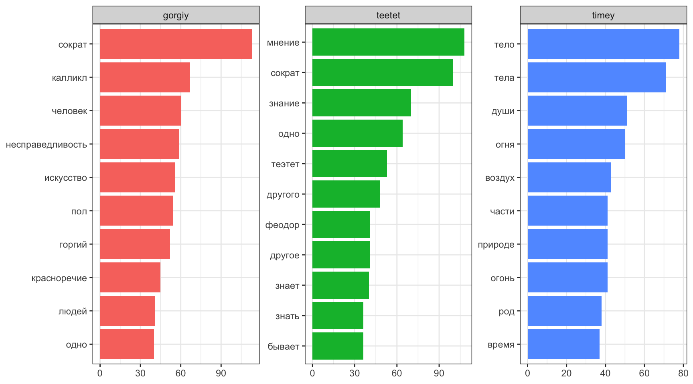
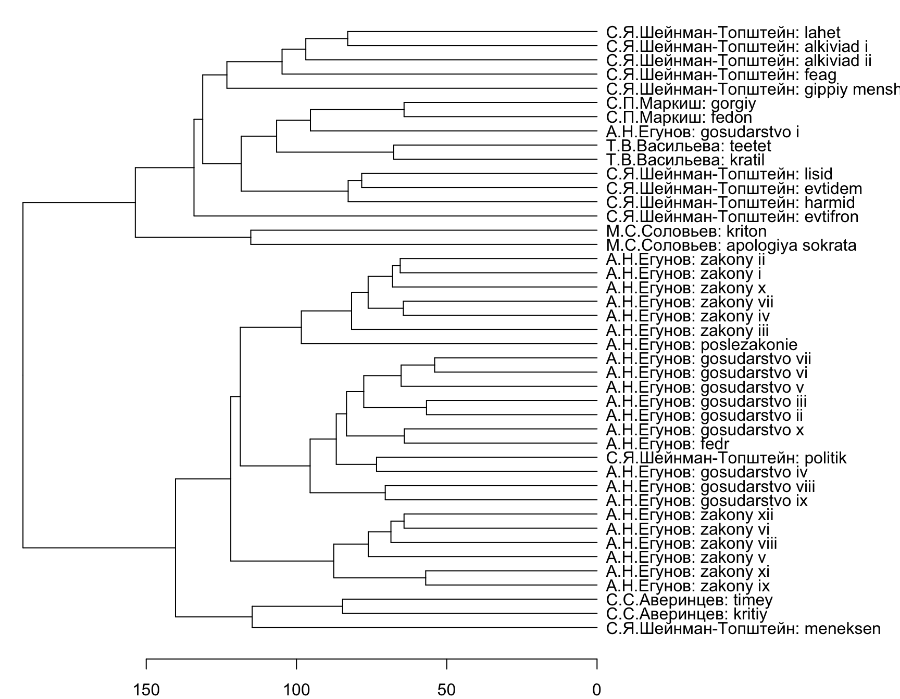
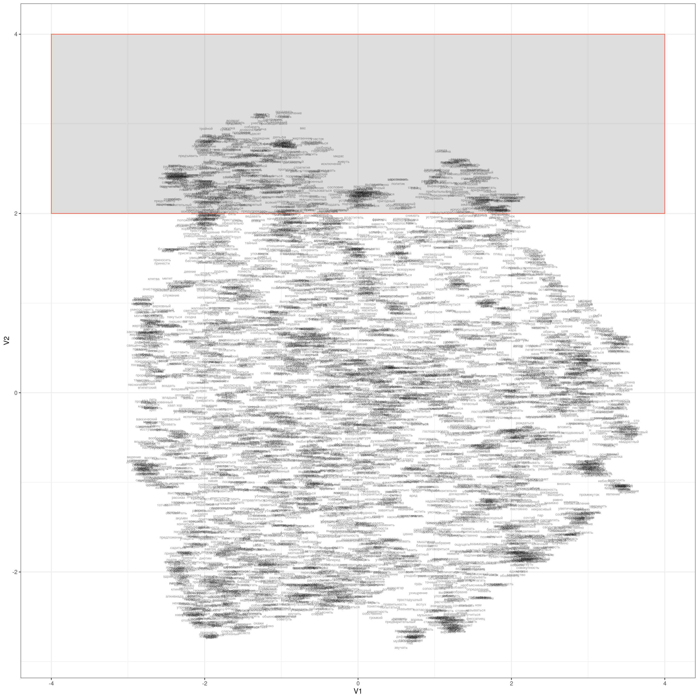

R version 4.3.3 (2024-02-29)Инструменты для анализа текста в R
летняя школа “Душа и процессор”
Аннотация
Язык программирования R дает исследователю полный набор инструментов для анализа текста. На занятии мы познакомимся с некоторыми из них, такими как анализ частотности, векторизация и кластеризация. Кроме того, обсудим, какие научные задачи могут решаться при помощи этих методов в историко-философских и историко-культурных исследованиях. Опыт программирования не требуется.
1 Введение в R
1.1 Установка R и RStudio
Мы будем использовать R (R Core Team 2023), так что для занятий понадобятся:
- R
- на Windows
- на Mac
- на Linux, также можно установить из командной строки:
sudo apt-get install r-cran-base- RStudio — IDE для R (можно скачать здесь)
Часто можно увидеть или услышать, что R — язык программирования для “статистической обработки данных”. Изначально это, конечно, было правдой, но уже давно R — это полноценный язык программирования, который при помощи своих пакетов позволяет решать огромный спектр задач. Мы будем использовать следующую версию R:
Некоторые люди не любят устанавливать лишние программы себе на компьютер, несколько вариантов есть и для них:
- RStudio cloud — полная функциональность RStudio с некоторыми ограничениями;
- webR REPL — ограниченная версия компилятора R, которая работает в вашем браузере и не требует никаких установок на компьютер
- Jupyter ноутбуки;
- Google Colab (нужно в настройках переключить ядро);
- VS Code — другое IDE, которое также позволяет работать с R;
- в принципе, в IDE нет нужды, можно работать из терминала, после установки, нужно всего лишь набрать
R.
1.2 Знакомство с RStudio
RStudio — основной IDE для R. После установки R и RStudio можно открыть RStudio и перед вами предстанет что-то похожее на изображение ниже:
 После нажатия на двойное окошко чуть левее надписи Environment откроется окно скрипта.
После нажатия на двойное окошко чуть левее надписи Environment откроется окно скрипта.

Все следующие команды можно
- вводить в окне консоли, и тогда для исполнения следует нажимать клавишу
Enter. - вводить в окне скрипта, и тогда для исполнения следует нажимать клавиши
Ctrl/Cmd + Enterили на команду Run на панели окна скрипта. Все, что введено в окне скрипта можно редактировать как в любом текстовом редакторе, в том числе сохранятьCtrl/Cmd + S.
1.3 R как калькулятор
Давайте начнем с самого простого и попробуем использовать R как простой калькулятор. +, -, *, /, ^ (степень), () и т. д.
40+2[1] 423-2[1] 15*6[1] 3099/9[1] 112+4*2[1] 10(2+4)*2[1] 122^3[1] 81.4 Создание переменных
x <- "гнев, богиня, воспой"
y <- sqrt(2)1.5 Пайпы (конвееры)
В нашем коде мы часто будем использовать знаки конвеера (или пайпы): |>. Они призваны показывать последовательность действий.
mean(sqrt(abs(sin(1:100))))[1] 0.76542641:100 |> # `|` + `>` получается |>
sin() |>
abs() |>
sqrt() |>
mean()[1] 0.7654264Чаще всего можно останавливать посередине и смотреть, что на каком этапе трансформации данных получилось.
1.6 Работа с пакетами
Все богатство R находиться в его огромной инфраструктуре пакетов, которые может разрабатывать кто угодно. Для сегодняшнего занятия нам понадобиться следующие пакеты: tidyverse, tidytext, stopwords, word2vec, uwot. Чтобы их установить нужно использовать команду
install.packages(c("tidyverse", "tidytext", "stopwords", "word2vec", "uwot"))Помните, что если вы установили пакет, это не значит, что функции пакета вам доступны. Пакет еще нужно включить

Проверим, что все установилось, запустим пакет.
library(tidyverse)1.7 Чтение текстовых файлов
В пакете readr (входит в tidyverse) для чтения текста есть функция read_lines(). В качестве первой переменной может выступать путь к файлу на компьютере или интернет ссылка:
ion <- read_lines("https://raw.githubusercontent.com/agricolamz/2024.06.02_text_analysis/main/data/plato_w/ion.txt")
head(ion, 20)[1] "Иону привет! Откуда ты теперь к нам? Из дому, из Эфеса , что ли? Совсем нет, Сократ, из Эпидавра , с празднеств Асклепия. Разве эпидаврийцы устраивают в честь этого бога и состязания рапсодов? Как же! Да и в других мусических искусствах там состязаются. Что же, и мы выступали на состязании? И как ты выступил? Мы получили первую награду, Сократ. Вот это хорошо! Смотри же, чтобы мы победили и на Панафинеях ! Так и будет, если бог захочет. Да, Ион, часто я завидовал вашему искусству... Оно всегда требует, чтобы вы выглядели как можно красивее и были в нарядном уборе, вместе с тем вам необходимо заниматься многими отличными поэтами, и прежде всех – Гомером, самым лучшим и божественным из поэтов, и постигать его замысел, а не только заучивать стихи. Как вам не позавидовать! Ведь нельзя стать хорошим рапсодом, не вникая в то, что говорит поэт; рапсод должен стать для слушателей истолкователем замысла поэта, а справиться с этим тому, кто не знает, что говорит поэт, невозможно. Тут есть чему позавидовать! Ты прав, Сократ. Для меня это и было самым трудным в моем искусстве; все же, мне думается, я объясняю Гомера лучше всех, так что ни Метродор Лампсакский, ни Стесимброт Фасосский, ни Главкон , ни другой кто из живших когда-либо не был в состоянии высказать о Гомере гак много верных мыслей, как я. Это хорошо. Ион; ты, верно, не откажешься сообщить их мне. Да, Сократ, действительно стоит послушать, в какой прекрасный убор я одеваю Гомера: по-моему, я достоин того, чтобы гомериды увенчали меня золотым венком. Я непременно выберу время, чтобы послушать тебя. А сейчас скажи мне вот что: только ли в Гомере ты силен или также и в Гесиоде и Архилохе ? Нет, только в Гомере; мне кажется, и этого достаточно. А есть ли что-нибудь такое, о чем и Гомер и Гесиод оба говорят одно и то же? Я думаю, есть, и даже многое. И то, что об этом говорит Гомер, ты лучше истолковал бы, чем то, что говорит Гесиод? Если они говорят одно и то же, то и я, Сократ, истолковал бы это одинаково. А то, о чем они говорят по-разному? Например, о прорицании говорят ли что-нибудь и Гомер и Гесиод? Конечно. Так что же? Кто истолковал бы лучше сходство и различие в том, что оба поэта говорили о прорицании – ты или кто-нибудь из хороших прорицателей? Кто-нибудь из прорицателей. А если бы ты был прорицателем, разве ты не мог бы толковать и то, что сказано ими по-разному, раз уж ты умеешь истолковывать сказанное одинаково? Ясно, что так. Как же это ты силен в том, что касается Гомера, а в том, что касается Гесиода и остальных поэтов, не силен? Разве Гомер говорит не о том же, о чем все остальные поэты? Разве он не рассказывает большею частью о войне и отношениях людей, хороших и плохих, простых и умудренных в чем-нибудь; о богах, как они общаются друг с другом и с людьми; о том, что творится на небе и в Аиде, и о происхождении богов и героев? Не это ли составляет предмет поэзии Гомера? Ты прав, Сократ. А что ж остальные поэты? Разве они говорят не о том же самом? Да, Сократ, но их творчество не такое, как у Гомера. Что же? Хуже? Да, гораздо хуже. А Гомер лучше? Конечно, лучше, клянусь Зевсом. Не правда ли, милый Ион, когда, например, о числе станут говорить многие, а один будет говорить лучше всех, то ведь кто-нибудь отличит хорошо говорящего? Я полагаю. Будет ли это тот же самый, кто отличит и говорящих плохо, или другой человек? Конечно, тот же самый. Не тот ли это, кто владеет искусством арифметики? Да. А если многие станут обсуждать, какая пища полезна, и кто-нибудь из них будет говорить получше, то отличить говорящего лучше всех может один человек, а говорящего хуже всех – другой, или один и тот же человек отличит обоих? Конечно, один и тот же; это ясно. Кто же он? Как его назвать? Это врач. Итак, скажем вообще: если многие говорят об одном и том же, то всегда один и тот же человек отличит, кто говорит хорошо, а кто плохо; а тот, кто не отличит говорящего плохо, не отличит, ясное дело, и говорящего хорошо, раз они говорят об одном и том же. Да, это так. Значит, один и тот же человек способен судить о них обоих? Да. Ты говоришь, что и Гомер, и остальные поэты, в том числе и Гесиод и Архилох, говорят хотя и об одном, но не одинаково: Гомер хорошо, а те хуже. Да, и я прав. Но если ты отличаешь говорящих хорошо, то отличил бы и говорящих хуже, то есть мог бы узнать, что они хуже говорят. Само собой разумеется. Значит, дорогой мой, мы не ошибемся, если скажем, что Ион одинаково силен и в Гомере, и в остальных поэтах, раз он сам соглашается, что один и тот же человек может быть хорошим судьей всех, кто говорит об одном и том же; а ведь чуть ли не все поэты воспевают одно и то же. В чем же причина, Сократ, что когда кто-нибудь говорит о другом поэте, я не обращаю внимания и не в силах добавить ничего стоящего, а попросту дремлю, между тем, лишь только кто упомянет о Гомере, я тотчас просыпаюсь, становлюсь внимателен и нисколько не затрудняюсь, что сказать? Об этом нетрудно догадаться, друг мой. Всякому ясно, что не благодаря выучке и знаниям ты способен говорить о Гомере; если бы ты мог делать это благодаря выучке, то мог бы говорить и обо всех остальных поэтах: ведь поэтическое искусство есть нечто цельное . Не так ли? Да. А если взять любое другое искусство в его целом, то разве не один и тот же способ рассмотрения применим и ко всем искусствам? Хочешь послушать, как я это понимаю, Ион? Очень хочу, Сократ, клянусь Зевсом; мне приятно слушать вас, мудрецов. Хотелось бы мне, Ион, чтобы ты был прав; но мудрецы-то скорее вы, рапсоды, актеры и те, чьи творения вы поете, а я всего только говорю правду, как и следует заурядному человеку. Посмотри, о каком пустяке я теперь спросил тебя: всякий может легко и просто понять мои слова, что рассмотрение останется тем же, если взять искусство в целом. В самом деле, разберем последовательно. Существует ли, например, искусство живописи как целое? Да. И много было и есть художников, хороших и плохих? Совершенно верно. Так вот, видал ли ты кого-нибудь, кто способен объяснить, чтó в живописи Полигнота , сына Аглаофонта, хорошо, а чтó нет, а когда дело коснется других художников – бессилен, и когда кто-нибудь говорит о произведениях всех прочих художников, то он дремлет, затрудняется и не может ничего объяснить; а когда нужно высказать мнение о Полигноте или об ином, но только одном каком-нибудь художнике, он вдруг просыпается, становится внимателен и нисколько не затрудняется, что сказать? Нет, клянусь Зевсом, я не видал такого человека. Ну, а если речь идет о ваянии, видал ли ты кого-нибудь, кто способен разобрать достоинства творчества Дедала, сына Метиона, или Эпея, сына Панопея, или Феодора Самосца , или одного кого-нибудь из прочих ваятелей, а произведения других ваятелей ему недоступны, и он дремлет, не зная, что сказать? Нет, клянусь Зевсом, я не видывал такого. И наверное, думаю я, когда дело идет об игре на флейте, либо на кифаре, или о пении под кифару, или об искусстве рапсодов, ты никогда не видал человека, который способен говорить об Олимпе, о Фамире, об Орфее или о Фемии, итакийском рапсоде , а слушая Иона эфесца, становится в тупик и не может сообразить, что в его пении хорошо, а что нет. Мне нечего возразить на это, Сократ. Я только уверен, что о Гомере я говорю лучше всех и при этом бываю находчив; и все другие подтверждают, что о Гомере я хорошо говорю, а об остальных нет. Вот и пойми, в чем тут дело. Понимаю, Ион, и сейчас объясню тебе, что это, по-моему, значит. Твоя способность хорошо говорить о Гомере – это, как я только что сказал, не уменье, а божественная сила, которая тобою движет, как в том камне, который Эврипид назвал магнесийским, а большинство называет гераклейским . Этот камень не только притягивает железные кольца, но и сообщает им такую силу, что они, в свою очередь, могут делать то же самое, что и камень, то есть притягивать другие кольца, так что иногда получается очень длинная цепь из кусочков железа и колец, висящих одно за другим; у них у всех сила зависит от того камня. Так и Муза сама делает вдохновенными одних, а от этих тянется цепь других восторженных. Все хорошие эпические поэты не благодаря уменью слагают свои прекрасные поэмы, а только когда становятся вдохновенными и одержимыми; точно так и хорошие мелические поэты; как корибанты пляшут в исступлении, так и они в исступлении творят эти свои прекрасные песнопения; когда ими овладеет гармония и ритм, они становятся вакхантами и одержимыми: вакханки в минуту одержимости черпают из рек мед и молоко, а в здравом уме – не черпают , и то же бывает с душою мелических поэтов, как они сами свидетельствуют. Говорят же нам поэты, что они летают, как пчелы, и приносят нам свои песни, собранные у медоносных источников в садах и рощах Муз . И они говорят правду: поэт – это существо легкое, крылатое и священное ; он может творить не ранее, чем сделается вдохновенным и исступленным и не будет в нем более рассудка; а пока у человека есть это достояние, никто не способен творить и вещать. Поэты, творя, говорят много прекрасного о различных предметах, как ты о Гомере, не от умения, а по божественному наитию, и каждый может хорошо творить только то, на что его подвигнула Муза, – один – дифирамбы, другой – энкомии, третий – ипорхемы, этот – эпические поэмы, тот – ямбы ; во всем же прочем каждый из них слаб. Ведь не от уменья они Это говорят, а от божественной силы: если бы они благодаря уменью могли хорошо говорить об одном, то могли бы говорить и обо всем прочем; потому-то бог и отнимает у них рассудок и делает их своими слугами, вещателями и божественными прорицателями, чтобы мы, слушатели, знали, что это не они, у кого и рассудка-то нет, говорят такие ценные вещи, а говорит сам бог и через них подает нам голос. Лучшее подтверждение этому взгляду – Тинних халкидец, который ни разу не создал ничего достойного упоминания, кроме того пэана , который все поют, – это, пожалуй, прекраснейшее из всех песнопений; то была просто какая-то \"находка Муз\", как выражается и сам Тинних. Тут, по-моему, бог яснее ясного показал нам все, чтобы мы не сомневались, что не человеческие эти прекрасные творения и не людям они принадлежат, но что они – божественны и принадлежат богам, поэты же – не что иное, как передатчики богов, одержимые каждый тем богом, который им овладеет. Чтобы доказать это, бог нарочно пропел прекраснейшую песнь устами слабейшего поэта. Разве я, по-твоему, не прав, Ион? По-моему, ты прав, клянусь Зевсом; твои речи захватывают мою душу, Сократ, и мне кажется, что хорошие поэты под божественным наитием передают нам это от богов. А вы, рапсоды, в свою очередь передаете творения поэтов? И в этом ты прав. Стало быть, вы оказываетесь передатчиками передатчиков? Совершенно верно. Скажи мне вот что, Ион, не скрывай от меня того, о чем я тебя спрошу. Всякий раз как тебе удается исполнение эпоса и ты особенно поражаешь зрителей, когда поешь, как Одиссей вскакивает на порог, открываясь женихам, и высыпает себе под ноги стрелы, или как Ахилл ринулся на Гектора , или что-нибудь жалостное об Андромахе, о Гекабе или о Приаме, – в уме ли ты тогда или вне себя, так что твоей душе, в порыве вдохновения, кажется, что она тоже там, где совершаются события, о которых ты говоришь, – на Итаке , в Трое или где бы то ни было? Как наглядно подтвердил ты свои слова, Сократ! Отвечу тебе, не таясь. Когда я исполняю что-нибудь жалостное, у меня глаза полны слез, а когда страшное и грозное – волосы становятся дыбом от страха и сердце сильно бьется. Что же, Ион? Скажем ли мы, что находится в Здравом рассудке тот человек, который, нарядившись в расцвеченные одежды и надев золотой венец, станет плакать среди жертвоприношений и празднеств, ничего не потеряв из своего убранства, или будет испытывать страх, находясь среди более чем двадцати тысяч дружественно расположенных людей, когда никто его не грабит и не обижает? Клянусь Звсом, Сократ, такой человек, по правде сказать, совсем не в здравом рассудке. Знаешь ли ты, что вы доводите до того же состояния и многих из зрителей? Знаю, и очень хорошо: я каждый раз вижу сверху, с возвышения, как слушатели плачут и испуганно глядят и поражаются, когда я говорю. Ведь мне необходимо очень внимательно следить за ними: если я заставлю их плакать, то сам буду смеяться, получая деньги, а если заставлю смеяться, сам буду плакать, лишившись денег. Теперь ты понимаешь, что такой зритель – последнее из тех звеньев, которые, как я говорил, получают одно от другого силу под воздействием гераклейского камня. Среднее звено – это ты, рапсод и актер, первое – это сам поэт, а бог через вас всех влечет душу человека куда захочет, сообщая силу через одного другому. И тянется, как от того камня, длинная цепь хоревтов и учителей с их помощниками: они держатся сбоку на звеньях, соединенных с Музой. И один поэт зависит от одной Музы, другой – от другой. Мы обозначаем это словом \"одержим\", и это почти то же самое: ведь Муза держит его. А от этих первых звеньев – поэтов, зависят другие вдохновленные: один от Орфея, другой от Мусея ; большинство же одержимы Гомером, или Гомер держит их. Один из них – ты, Ион, и Гомер держит тебя. Когда кто-нибудь поет творения другого поэта, ты спишь и не находишь, что сказать, а когда Запоют песнь этого твоего поэта, ты тотчас пробуждаешься, твоя душа пляшет , и ты нисколько не затрудняешься, что сказать. Ведь то, что ты говоришь о Гомере, все это не от уменья и знания, а от божественного определения я одержимости; как корибанты чутко внемлют только напеву, исходящему от того бога, которым они одержимы, и для этого напева у них достаточно и телодвижений и слов, о других же они и не помышляют, так и ты, Ион, когда кто-нибудь вспомнит о Гомере, знаешь, что сказать, а в остальных поэтах затрудняешься. И причина того, о чем ты меня спрашиваешь – почему ты о Гомере Знаешь, а об остальных нет, – причина здесь та, что не выучкой, а божественным определением ты – искусный хвалитель Гомера. Хорошо говоришь ты, Сократ; а все же я удивился бы, если бы тебе удалось убедить меня, что я восхваляю Гомера в состоянии одержимости и исступленности. Я думаю, что и тебе не казалось бы так, если бы ты послушал, как я говорю о Гомере. Да я и хочу послушать, только не раньше, чем ты ответишь мне вот на какой вопрос: из того, что говорит Гомер, о чем ты хорошо говоришь? Ведь не обо всем же, конечно . Будь уверен, Сократ, что обо всем без исключения. Но ведь не о том же, чего ты, паче чаяния, не знаешь, хотя Гомер об этом и упоминает? О чем же это Гомер говорит, а я не знаю? Гомер часто и много говорит о различных искусствах, например, об управлении колесницей, – сейчас скажу тебе, если вспомню место. Да я сам скажу, я помню. Так скажи мне, что говорит Нестор своему сыну Антилоху, советуя ему быть осторожным на поворотах при состязании колесниц на тризне Патрокла. \"Сам же\", – говорит Нестор, – Достаточно. Вот здесь, Ион, кто лучше мог бы судить, правильно ли говорит Гомер или нет – врач или возничий? Конечно, возничий. Потому ли, что владеет этим искусством, или по другой причине? Нет, именно благодаря своему искусству. И каждому искусству дано от бога ведать одним каким-нибудь делом? Ведь то, что мы узнаём, овладев искусством кормчего, мы не можем узнать, освоив искусство врача. Конечно, нет. И, овладев искусством строителя, – то, что узнаём, освоив искусство врача? Конечно, нет. Не так ли и во всех искусствах: что мы узнаем, изучив одно искусство, того мы не узнаем, изучив другое? Но сначала скажи мне вот что: не называешь ли ты одно искусство так, а другое иначе? Да. И я, замечая, что одно искусство есть знание одних вещей, а другое – других, называю одно так, а другое иначе; так же поступаешь и ты? Да. Ведь если бы и то и другое искусство было знанием одних и тех же вещей, то зачем стали бы мы называть одно так, а другое – иначе, раз одно и то же можно было бы узнать, овладев любым из двух. Вот, например, я знаю, что здесь пять пальцев, и ты знаешь то же самое, что и я; и если бы я тебя спросил, не с помощью ли одного искусства – искусства счисления – познаём одно и то же и я и ты или с помощью разных искусств, ты, конечно, сказал бы, что с помощью одного и того же. Да. Вот теперь скажи мне то, о чем я хотел спросить: думаешь ли ты, что так бывает во всех искусствах и что, изучая одно искусство, познаешь одно, а изучая другое – познаешь уже не то же самое, а нечто совсем иное, если, конечно, само искусство другое. Я думаю, что так, Сократ. А кто не овладеет каким-либо искусством, тот не способен будет хорошо знать то, что говорится или делается согласно этому искусству, не правда ли? Правда твоя. А кто лучше знает, правильно ли говорит Гомер в тех стихах, которые ты привел, – ты или возничий? Возничий. Ведь ты – рапсод, а не возничий. Да. А искусство рапсода – иное по сравнению с искусством возничего? Да. И раз оно иное, то оно есть знание иных вещей? Да. Сократ. Ну, а когда Гомер говорит, как Гекамеда, наложница Нестора, дает раненому Махаону питье, приблизительно в таких словах: то, чтобы узнать, правильно ли говорит Гомер или нет, требуется врачебное искусство или искусство рапсода? Врачебное. А когда Гомер говорит: то как мы ответим на вопрос, чье искусство – рыболова или рапсода – скорее разберет, что он говорит, и правильно ли? Ясно, Сократ, что искусство рыболова. Посмотри же: если бы ты, задавая мне вопрос, сказал: \"Раз ты, Сократ, находишь у Гомера то, что подлежит ведению каждого из искусств, то найди мне и для прорицателя и его искусства что-нибудь такое, о чем ему надлежит судить, хорошо или плохо это сочинено\", – посмотри, как легко и правильно я тебе отвечу. Часто Гомер говорит это и в \"Одиссее\", – например, то, что говорит женихам гадатель из рода Мелампа, Феоклимен: часто и в \"Илиаде\", например, в \"Сражении у стен\"; ведь и там Гомер говорит: Вот это, скажу я, и тому подобное подлежит рассмотрению и суждению прорицателя. И ты будешь прав, Сократ. Да и ты прав, Ион, говоря об этом. Ну-ка, теперь и ты выбери мне, как я тебе выбрал из \"Одиссеи\" и из \"Илиады\" то, что относится к прорицателю, к врачу и к рыболову, – так и ты, Ион, выбери мне – ты же и опытнее в Гомере, – чтó относится к рапсоду и к его искусству и что подлежит рассмотрению и суждению рапсода предпочтительно пред всеми другими людьми. Я утверждаю, Сократ, что решительно всё. Нет, не это ты утверждаешь, Ион, будто решительно всё, неужто ты так забывчив? А не следовало бы рапсоду быть забывчивым. Что же я забыл? Не помнишь разве, как ты говорил, что искусство рапсода – иное по сравнению с искусством возничего? Помню. И ты соглашался, что раз оно иное, то иной будет и область его ведения? Да. Значит, по твоим же собственным словам, уже не все будет входить в ведение рапсода и его искусства. Кроме, пожалуй, вот таких вещей, Сократ. Под \"такими вещами\" ты понимаешь, видимо, то, что относится к другим искусствам; но если не все, то что же именно будет в ведении рапсода? По-моему, в его ведении будет то, какие речи приличны мужчине и какие – женщине, какие – рабу, а какие – свободному, какие – подчиненному, а какие – начальствующему. А какие распоряжения надо сделать, если в море корабль застигнут бурей, по-твоему, рапсод будет знать лучше, чем кормчий? Нет, это лучше знает кормчий. Или как надо распорядиться в случае болезни, рапсод будет знать лучше, чем врач? Нет. Но, по-твоему, ты знаешь, как должен говорить раб? Да. Например, что должен сказать раб-волопас, укрощающий взбесившихся быков, по-твоему, будет лучше знать рапсод, а не волопас? Нет, конечно. Или то, что должна сказать женщина-пряха, прядущая шерсть? Нет. А может быть, рапсод будет знать, что должен сказать военачальник, ободряя воинов? Да, вот это рапсод будет знать. Что же, искусство рапсода – это искусство военачальника? Я-то, по крайней мере, знал бы, какие речи подобают военачальнику. Потому что ты. вероятно, и в искусстве военачальника сведущ, Ион. А если бы, например, ты одновременно и умел играть на кифаре и был бы наездником, а значит распознавал бы хорошо и дурно выезженных коней, и я бы спросил тебя: благодаря какому же искусству ты, Ион, распознаёшь хорошо выезженных коней? Тому же самому, благодаря которому ты стал наездником, или тому, благодаря которому играешь на кифаре, что ответил бы ты мне? Благодаря тому же искусству, с помощью которого я стал наездником, сказал бы я. И если бы ты отличал, кто хорошо играет на кифаре, ты согласился бы, что делаешь это при помощи того искусства, благодаря которому ты – кифарист, а не благодаря тому, что ты – наездник? Да. А если ты знаешь толк в воинском деле, то при помощи ли того искусства, благодаря которому ты сведущий военачальник, или из-за того, что ты хороший рапсод? По-моему, это совершенно безразлично. Как? Ты говоришь, что это совершенно безразлично? Искусство рапсода и искусство военачальника – одно искусство или два? Что ты скажешь? По-моему, одно. Значит, кто хороший рапсод, тот, оказывается, и хороший военачальник? Непременно, Сократ. И оказывается, кто хороший военачальник, тот и хороший рапсод? Этого-то я не думаю. Но кто хороший рапсод, тот, по-твоему, и хороший военачальник? Конечно. Не лучший ли ты рапсод, чем любой из греков? И намного, Сократ. Так ты и военачальник, Ион, лучший среди греков? Будь уверен в этом, Сократ; а научился я этому из произведений Гомера. Ради богов, Ион, почему же в таком случае ты, лучший военачальник и лучший рапсод из греков, только поешь, разъезжая среди греков, а не начальствуешь над войском? Неужели ты думаешь, что рапсод, увенчанный золотым венком, очень нужен грекам, а военачальник – не нужен? Наш город, Сократ, находится под вашей властью и военным начальствованием и поэтому вовсе не нуждается в военачальнике, а ваш город и город лакедемонян не выберут меня военачальником: вы ведь считаете, что и сами справитесь. Дорогой Ион, не знаешь ли ты Аполлодора из Кизика? Какого это? Того, кого афиняне много раз избирали своим полководцем, хотя он и чужестранец; и Фаносфену с Андроса, и Гераклиду из Клазомен наш город поручает и стратегию, и другие должности, так как они, хотя и чужеземцы, показали себя достойными этого. Почему же Иона эфесца город наш не изберет военачальником и не почтит этим званием, если он окажется достойным? Что ж? Разве вы, эфесцы , не афиняне издревле, или Эфес уступает какому-нибудь другому городу? Если ты, Ион, прав, что благодаря уменью и знанию ты способен восхвалять Гомера, тогда ты виноват вот в чем: пообещав показать, как много хорошего ты знаешь о Гомере, ты обманываешь меня и далек от того, чтобы показать мне это. Ты даже не желаешь ответить на то, чего я давно добиваюсь, – что это такое, в чем ты силен. Вместо того ты, прямо-таки как Протей , извиваясь во все стороны, принимаешь всевозможные обличья и, в конце концов, ускользаешь от меня, оказавшись даже военачальником, лишь бы только не показать, как ты силен в гомеровской премудрости. Если ты искусен – о чем я только что говорил, – то ты обманываешь меня, не сдержав обещания показать это на Гомере, и поступаешь несправедливо; если же ты не искусен и, ничего не зная по Гомеру, но одержимый божественным наитием, высказываешь об этом поэте много прекрасного, как я уже о тебе говорил, то ты ни в чем не виноват. Итак, вот тебе на выбор: кем ты хочешь у нас прослыть – несправедливым человеком или божественным? Большая разница, Сократ: ведь гораздо прекраснее прослыть божественным. Так это – нечто более прекрасное – и останется у нас за тобой, Ион; ты – божественный, а не искусный хвалитель Гомера."В большинстве случаев, тексты получится считать, однако иногда при работе со старыми архивами могут возникнуть проблемы с кодировками, например, все тексты в старейшей интернет-библиотеке на русском языке — библиотеке Максима Машкова (lib.ru) — записаны в KOI8-R. В функциях пакета readr есть аргумент locale, который позволяет эксплицитно указать кодировку, а при считывании происходит процесс конвертации в стандартный для многих операционных систем UTF-8. Для текстов на русском языке важны следующие кодировки
KOI8-R, а для украинского языка —KOI8-U;CP1251(также известная под названиемWindows-1251) покрывает и другие кириллические письменности такие как украинский, белорусский, болгарский, сербский, македонский и другие.
2 Работа с корпусом текстов
2.1 О корпусе
Для этого мастер-класса мы забрали русские переводы текстов Платоновского корпуса с сайта Платоновского философского общества. Для скрапинга использовался пакет rvest. Для тех, кому интересно, – код лежит по ссылке.
Тексты на сайте приводятся по изданию: Платон. Сочинения в 4 тт. Под общей редакцией А. Ф. Лосева, В. Ф. Асмуса и А. А. Тахо-Годи. Серия «Философское наследие». 1990-1994.
Прежде чем сложить их в папку, мы удалили все латинские и греческие символы, цифры, а также все примечания. Код для этой предварительной “уборки” здесь.
В итоге у нас получился корпус из 51 текста: это 31 текст из числа 36, входящих в тетралогии (без Писем, “Соперников”, “Миноса”, “Гиппарха” и “Клитофонта”), при этом “Государство” и “Законы” разбиты по книгам (10 и 12, соответственно). Диалогов, не вошедших в тетралогии (так называемых spuria из Appendix Platonica), здесь тоже нет.
Уведомление
В большинстве случаев анализировать автора по переводам – не самое удачное решение (если только вы не изучаете сами переводы). Но мы хотели, чтобы происходящее на экране было понятно всем, а не только антиварварам.
2.2 tidy-формат
Основные принципы опрятных данных:
- отдельный столбец для каждой переменной;
- отдельный ряд для каждого наблюдения;
- у каждого значения отдельная ячейка;
- один датасет – одна таблица.

C такими данными удобно работать, используя “грамматику манипуляции данных”, лежащую в основе dplyr и других пакетов семейства tidyverse. Эта грамматика предоставляет последовательный набор глаголов, которые помогают решать наиболее распространенные задачи манипулирования данными:
mutate()добавляет новые переменные, которые являются функциями существующих переменных;select()выбирает переменные на основе их имен;filter()выбирает наблюдения на основе их значений;summarise()обобщает значения;arrange()изменяет порядок следования строк.
Все эти глаголы естественным образом сочетаются с функцией group_by(), которая позволяет выполнять любые операции “по группам”, и с оператором pipe %>% из пакета magrittr.
Дальше мы попробуем использовать некоторые из этих функций.
2.3 Считываем наш корпус
Чтобы прочитать корпус текстов, укажите путь к ним из рабочей директории. Узнать, какая директория у вас рабочая, можно так:
getwd()Изменить рабочую директорию можно из панели инструментов (вкладка Session, Set Working Directory) или при помощи функции setwd(), указав в качестве аргумента путь к рабочей директории на вашем компьютере (в кавычках, так как это символьный вектор).
Загрузите в вашу рабочую директорию папку с корпусом текстов Платона. Ее можно найти по ссылке.
Папка data содержит две вложенные: plato_w c переводами Платона и plato_l с лемматизированными текстами. Нам понадобятся обе, поместите data со всем содержимым в рабочую директорию.
Уведомление
Для начала узнаем, какие файлы лежат в папке plato_w:
filenames <- list.files("./data/plato_w", full.names = TRUE)
head(filenames) [1] "./data/plato_w/alkiviad_i.txt"
[2] "./data/plato_w/alkiviad_ii.txt"
[3] "./data/plato_w/apologiya_sokrata.txt"
[4] "./data/plato_w/evtidem.txt"
[5] "./data/plato_w/evtifron.txt"
[6] "./data/plato_w/feag.txt" length(filenames)[1] 51Объект filenames – это символьный вектор, в котором 51 элемент. В нем хранятся пути до файлов с диалогами. Функция head() выводит только первые шесть элементов
Теперь наша задача – прочитать их все в R, чтобы можно было посчитать частотности. Для этого нужен цикл, который продется по всем файлам и соберет оттуда текст.
corpus <- map(filenames, read_lines)Теперь у вас в окружении появился список corpus, в котором 51 элемент, по числу файлов. Достать любой элемент из списка и посмотреть на него можно по индексу. Текст большой, поэтому снова выведем только начало.
corpus[[1]][1] "Сын Клиния , я полагаю, ты дивишься тому, что я, став первым твоим поклонником, продолжаю оставаться им и теперь, когда другие от тебя отвернулись, а также и тому, что тогда как все прочие досаждали тебе своими беседами, я в течение стольких лет не сказал тебе ни единого слова. Причина тому была не человеческого, но божественного свойства ; позже ты сможешь оценить ее значение. Но теперь, когда она больше не служит препятствием, я пришел к тебе: я полон надежды, что и впредь это препятствие не возникнет. Все это время я примечал, как ты ведешь себя по отношению к твоим поклонникам: сколь много их ни было и как ни были они заносчивы, не было среди них ни одного, которого ты не отвадил бы своей высокомерной гордыней. Причину твоего высокомерного превосходства я тебе сейчас объясню. Ты утверждаешь, что тебе не нужен никто из людей: мол, присущее тебе величие – как телесное, так и душевное – таково, что ты ни в ком не нуждаешься. Ты считаешь, что ты – первый среди людей по красоте и росту, причем для каждого очевидно, что это правда. Далее, по твоему мнению, ты происходишь из самого отважного рода в своем городе, самом великом из греческих городов, и потому у тебя есть по отцу множество достойнейших друзей и сородичей, которые в случае нужды придут тебе на помощь, и не меньшее число столь же достойных родственников по матери. Самый же сильный из них покровитель, как ты считаешь, – Перикл, сын Ксантиппа, коего твой отец оставил после себя вашим опекуном – твоим и твоего брата : ведь он не только в этом городе волен вершить все, что захочет, но и по всей Элладе и среди многочисленных и могущественных варварских племен. Добавлю еще, что ты – из богатых; впрочем, как кажется, это менее всего питает твою гордыню. Чванясь всем этим, ты подавил своих поклонников, а они, будучи послабее, признали свое поражение. Для тебя это не прошло незамеченным. Поэтому я уверен, что ты удивляешься настроению, мешающему мне отречься от моей любви, и спрашиваешь себя, на что глядя я сохраняю твердость там, где все остальные бежали. Но, быть может, тебе невдомек, Сократ, что ты лишь чуточку меня упредил: я ведь еще раньше предполагал подойти к тебе и спросить, что тебе от меня надо и чего ради ты меня не оставляешь в покое, преследуя меня на каждом шагу. Ведь и в самом деле я дивлюсь, какое у тебя ко мне дело, и с величайшей охотой получил бы ответ на этот вопрос. Значит, можно предполагать, что ты со вниманием меня выслушаешь, коль скоро, как ты говоришь, тебе желательно узнать мои намерения: слова мои будут обращены к терпеливому слушателю. Несомненно. Говори. Смотри же, пусть тебе не покажется удивительным, если, с трудом начав этот разговор, я с таким же трудом его и окончу. Говори же, почтеннейший; я готов тебя выслушать. Пусть будет так. Нелегкое это дело – объясняться в любви человеку, ни в чем не уступающему своим поклонникам; однако надо решиться и изложить тебе мои намерения. Если бы я, мой Алкивиад, видел, что ты привержен ко всему тому, что я только что перечислил, и намерен продолжать жить так и дальше, я давно бы простился со своей влюбленностью, по крайней мере я в это верю. Но я хочу доказать тебе самому, что у тебя совсем другие замыслы, и ты увидишь из этого, насколько внимательно я все это время за тобою следил. Мнится мне, что если бы кто-нибудь из богов тебе рек: “Алкивиад, желаешь ли ты жить тем, чем жил прежде, или предпочел бы тотчас же умереть, коль скоро не сможешь рассчитывать в жизни на большее?” – ты избрал бы смерть. И я скажу тебе сейчас, в какой надежде ты продолжаешь жить. Ты полагаешь, что если вскорости выступишь перед афинским народом – а это предстоит в самый короткий срок, – ты сумеешь ему доказать, что достоин таких почестей, каких не удостаивался ни Перикл и никто из его предшественников; доказав это, ты ооретешь великую власть в городе, а уж коли здесь, то и во всей Элладе ты станешь самым могущественным, да и не только среди эллинов, но и среди варваров, обитающих на одном с нами материке . А если бы тот же самый бог сказал, что тебе следует править лишь здесь, в Европе, в Азию же тебе путь закрыт и ты не предназначен для тамошних дел, то. думаю я, жизнь была бы тебе не в жизнь на этих условиях, коль скоро ты не сможешь, так сказать, заполонить своим именем и могуществом все народы. Я полагаю, ты не считаешь достойным упоминания никого, кроме Кира и Ксеркса . А что ты питаешь такую надежду, я не предполагаю. но точно знаю. Быть может, сознавая, что я говорю правду, ты спросишь: “Какое отношение имеет это. Сократ, к тому. что ты собирался мне сказать о твоей неотступной привязанности ко мне?” Я же тебе отвечу: “Милый сын Клиния и Дпномахи, без меня невозможно осуществить все эти твои устремления: такова моя власть, как я думаю, над твоими делами и тобою самим. Потому-то, полагаю я, бог и запретил мне беседовать с тобой, и я ожидал на это его дозволения. Но поскольку ты лелеешь надежду доказать городу свое право на всевозможные почести, а доказав это, тотчас же забрать в свои руки власть, то и я надеюсь получить при тебе величайшую власть, доказав, что представляю собой для тебя весьма ценного человека, вплоть до того, что ни твой опекун , ни твои родичи и никто другой не может обеспечить тебе желанного могущества, кроме меня, – но, конечно, с помощью бога. А так как ты был очень юн и еще не обременен такими надеждами, то бог, как я думаю, запрещал мне с тобой разговаривать, чтобы не сказать тебе что-то впустую. Ныне же он разрешил меня от запрета , и теперь ты меня послушаешь”. Мой Сократ, ты кажешься мне гораздо более странным теперь, когда ты со мной заговорил, чем раньше, когда молча за мною следовал, хотя и тогда ты казался мне весьма необычным. Ты уже разобрался, как кажется, в моих замыслах – лелею я их или нет, и если я с тобой и не соглашусь, я все равно не сумею тебя разубедить. Что ж, пусть. Но если бы я и действительно питал подобные замыслы, каким образом они осуществятся у меня с твоей помощью и не получат свершения без тебя? Можешь ты мне это объяснить? Ты спрашиваешь, могу ли я произнести длинную речь – в том роде, как ты привык слушать? Но такая речь не в моем духе. Однако, думаю, я мог бы тебе доказать, что дело обстоит именно таким образом, если только ты в одной малости придешь мне на помощь. Коли то, о чем ты просишь, не трудно, я готов. Что же, тебе кажется трудным отвечать на вопросы? Нет, не кажется. Так отвечая же. А ты спрашивай. Значит, я буду задавать тебе вопросы так, как если бы ты в самом деле замышлял то, о чем я сейчас говорил? Да, если тебе так угодно; хотел бы я знать, каковы будут твои вопросы. Ну что ж. Я утверждаю, что ты намерен в самый короткий срок выступить перед афинянами со своими советами. Итак, если бы в тот миг, как ты собирался взойти на трибуну, я остановил бы тебя и спросил: “Алкивиад, о чем же собираются совещаться афиняне, что ты намерен давать им советы? Видимо, о вещах, известных тебе лучше, чем им?” – что бы ты мне ответил? Я конечно же сказал бы, что о вещах, более известных мне, чем им. Следовательно, ты способен быть хорошим советчиком в вещах, кои ты знаешь? Как же иначе? А знаешь ты только то, чему научился от других или открыл сам? Что же еще мог бы я знать? Но возможно ли, чтобы ты выучился чему-либо или что-то открыл, не желая учиться или заниматься сам поиском? Нет, невозможно. Ну а желал бы ты искать то, что ты, по твоему мнению, уже знаешь, или учиться таким вещам? Конечно, нет. Значит, было время, когда ты не считал, будто знаешь то, что ты знаешь сейчас? Разумеется. Но в общем-то я могу сказать, чему ты учился; если я что-либо упущу, ты мне подскажи. Насколько я припоминаю, ты обучался грамоте и игре на кифаре, а также борьбе. Учиться игре на флейте ты не пожелал . Вот и весь твой запас знаний, разве что ты обучился еще чему-то тайком от меня; но значит, ты это делал, не выходя из дому ни днем, ни ночью. Нет, никаких других занятий, кроме тех, что ты указал, у меня не было. Итак, ты собираешься выступить с советами перед афинянами, когда они станут совещаться относительно грамотности – как им правильно писать? Нет, клянусь Зевсом, не собираюсь. Но тогда ты будешь давать советы, как ударять по струнам кифары? Ни в коем случае. Но ведь у них нет также привычки совещаться в народном собрании о приемах борьбы? Конечно, нет. Тогда о чем же им совещаться? Уж, наверное, не о строительстве? Нет, нет. Ведь па этот счет у зодчего найдутся лучшие советы, чем у тебя? Да. Разумеется, и не тогда ты взойдешь на помост, когда они станут совещаться о прорицаниях? Нет, не тогда. Ведь прорицатель это знает лучше тебя? Да. При этом ведь неважно, высок он или низок, красив или безобразен, благородного рода или же нет? Конечно. Ну а давать советы о чем бы то ни было подобает ведь знатоку, а не богатому человеку? Конечно. Когда афиняне совещаются относительно здоровья своих сограждан, им неважно, беден или богат тот, кто их убеждает, но они заинтересованы в том, чтобы советчик их был врачом. Это естественно. Но в каком же тогда случае будет правильным с твоей стороны выступить перед ними с советами? Тогда, когда они станут совещаться о своих делах. Ты имеешь в виду судостроение – какие именно им следует сооружать суда? Да нет же, Сократ, совсем не это. Я полагаю, ты не разбираешься в таком деле. Именно поэтому ты воздержишься или по какой-то иной причине? Нет, именно по этой. Но какие же их дела ты имеешь в виду, о которых они станут совещаться? Я имею в виду, Сократ, войну или мир или другие подобные же дела государства. Точнее говоря, когда они станут советоваться, с кем заключить мир, а с кем воевать и каким образом? Да. Разве не нужно это делать наилучшим образом? Да. И в наиболее благоприятное время? Несомненно. Ив течение такого срока, какой представляется наивыгоднейшим? Да. А если бы афиняне совещались о том, с кем надо вести борьбу в палестре – обычную или на кулаках – и каким образом, кто дал бы при этом лучший совет – ты или учитель гимнастики? Конечно, учитель гимнастики. А можешь ли ты мне сказать, что принимает во внимание учитель гимнастики, когда собирается дать совет, с кем следует бороться, а с кем нет, а также когда это надо делать и каким способом? Я вот что имею в виду: ведь бороться надо с теми, с кем это стоит делать? Разве не так? Так. И делать это надо по возможности лучше? Да, по возможности. И в самое благоприятное для этого время? Разумеется. А певцу разве не приходится временами сопровождать свое пение игрой на кифаре и ритмическими движениями? Приходится. И именно тогда, когда это лучше всего подобает? Да. И столько раз, сколько это будет наилучшим? Конечно. Далее. Поскольку ты прилагаешь “лучшее” к обоим случаям – и к музыкальному сопровождению и к борьбе, что ты назовешь лучшим в игре на кифаре, подобно тому как я называю в борьбе лучшим ее видом борьбу гимнастическую? Какой ты в этом случае назовешь вид? Я тебя не понимаю. Но попробуй мне подражать. Мои слова означали тот вид, который являет собой совершенство: совершенно то, что делается в соответствии с правилами искусства. Разве не так? Так. А гимнастика разве не искусство? Конечно, искусство. Я же сказал, что наилучшим в борьбе является ее гимнастический вид. Да, сказал. Так разве я был не прав? Я думаю, прав. Давай же и ты – ибо и тебе подобает правильно рассуждать – скажи прежде всего, что это за искусство, в котором уместны одновременная игра на кифаре, пение и ритмические движения? Как все это вместе зовется? Можешь ты это сказать? Право, не могу. Но попробуй подойти к этому так: какие богини покровительствуют этому искусству? Ты разумеешь Муз , мой Сократ? Да. Смотри: каково же наименование этого искусства по Музам? Мне кажется, ты имеешь в виду мусическое искусство. Да, именно его. Что же бывает в нем совершенным? Подобно тому как я тебе раньше определил правильность в гимнастическом искусстве, так и ты сейчас дай определение в отношении искусства мусического: в чем заключена его правильность? Я думаю, в гармоничности . Отлично. Давай же назови теперь лучшее в деле войны и мира, подобно тому как ты раньше назвал гармонию лучшим в одном из искусств и гимнастические упражнения – в другом. Попытайся же и здесь назвать лучшее. Но я не очень-то это разумею... Да ведь это позор. Представь, если кто обратится к тебе за советом по поводу питания – мол, какое будет получше и сколько и когда оно будет уместнее, а затем тебя спросит: “Что ты разумеешь под лучшим, Алкивиад?” – ты ведь сможешь ответить, что разумеешь более здоровое питание, хотя ты и не выдаешь себя за врача. А тут, выдавая себя за знатока и выступая советчиком, как человек знающий, ты не сумеешь ответить на заданный тебе вопрос! И ты не почувствуешь при этом стыда? И не покажется тебе это позорным? Очень даже покажется. Смотри же, постарайся сказать, к чему тяготеет наилучшее при заключении мира и с кем следует сражаться во время войны? Но я хоть и стараюсь, не могу этого уразуметь. Значит, ты не знаешь, какие взаимные обвинения выдвигаются при объявлении войны сторонами и с какими словами мы начинаем обычно войну? Нет, знаю: мы утверждаем при этом, что мы обмануты, ограблены либо потерпели насилие. Довольно! А говорим ли мы о том, каким образом потерпели все это? Попытайся сказать, в чем различие того или другого случая. Под “случаем”, мой Сократ, ты подразумеваешь, происходит ли это справедливым образом или несправедливым? Вот именно. Но это целиком и полностью отличается одно от другого. Прекрасно. Что же ты посоветуешь афинянам – сражаться против обидчиков или против тех, кто действует справедливо? Вопрос твой коварен: ведь даже если кому-либо придет в голову, что следует воевать против тех, кто действует справедливо, афиняне на это не пойдут. По-видимому, потому, что это противоречит обычаю. Разумеется; ведь это было бы неблагородно. Следовательно, твои речи будут соответствовать этому справедливому обычаю? Безусловно. В таком случае на мой вопрос, что является лучшим – воевать или нет, с кем именно воевать и в какое именно время, – ответом будет, что лучшее – это более справедливое . Не так ли? Кажется, так. Но как же, милый Алкивиад? Мог ли ты сам не знать, что ты это знаешь, или же ты скрыл от меня, что обучался этому у учителя, научившего тебя различать более или менее справедливое? Кто же этот учитель? Скажи мне, чтобы ты и меня мог определить к нему в ученики. Сократ, ты надо мной насмехаешься! Нет, клянусь твоим и моим богом дружбы! И менее всего я хотел бы нарушить такую клятву . Но если ты знаешь такого учителя, скажи мне, кто он? А что, если я не знаю? Почему ты не веришь, что я иным путем мог узнать, что такое справедливость и несправедливость? Конечно, мог, если открыл это сам. А ты полагаешь, что на это я не способен? Нет, наоборот, если только ты будешь искать. Значит, ты думаешь, что я не мог бы искать? Разумеется, мог бы, если бы считал, что чего-то не знаешь. И ты полагаешь, что со мной этого никогда не бывало? Ты хорошо сказал. Можешь ли ты назвать мне то время, когда ты считал, что не знаешь, что такое справедливость и несправедливость? Например, в прошлом году ты считал, что не знаешь этого, и искал? Или ты считал, что уже это знаешь? Отвечай правду, чтобы беседа наша не была бесплодной. Я считал, что уже это знаю. А в позапрошлом году или четыре-пять лет тому назад ты так не считал? Нет, считал. Но ведь до этого ты был еще мальчиком, не так ли? Да. А ведь я хорошо знаю, что ты тогда думал, будто тебе эти вещи ведомы. Как можешь ты быть в этом уверен? Я часто слышал твои речи, когда ты был мальчиком, – в школе и в других местах, во время игры в бабки или во время прочих забав: ты не затруднялся в вопросах справедливости и несправедливости, но, наоборот, весьма уверенно и отважно высказывал свое мнение о любом из мальчишек – что, мол, он мошенник и негодяй и играет нечестно . Разве я лгу? Но что еще должен был я делать, Сократ, если кто-то меня надувал? Однако, если тогда ты не знал, надувают тебя или нет, уместно ли тебе спрашивать, что ты мог сделать? Клянусь Зевсом, я не только знал, но точно был уверен, что меня надувают. Похоже, значит, ты считаешь, что и мальчиком знал, что такое справедливость и несправедливость? Да, знал! Так когда же ты это открыл? Ведь не тогда же, когда считал, что ты это знаешь? Конечно, нет. А когда же ты считал, что этого не знаешь? Вот видишь – ты никак не найдешь такого времени. Клянусь Зевсом, Сократ, не знаю, что и сказать. Значит, не открытие помогло тебе это узнать. Да, совсем не оно, как видно. Но недавно ты сказал, что знаешь, не обучавшись этому. А если ты и не открывал этого и этому не учился, каким образом и откуда ты это знаешь? Но, быть может, я неверно тебе ответил, когда сказал, что знаю это благодаря собственному открытию. А как это обстоит на самом деле? Я думаю, что обучился этому так же, как и другие. Мы снова вернулись к тому, с чего начали. От кого ты этому научился? Поделись со мной. От многих. Ссылаясь на многих, ты прибегаешь не к очень-то серьезным учителям, Почему же? Разве они не способны обучить? Даже игре в шашки – и то не способны. А ведь это куда легче, чем внушить понятие о справедливости. Что ж, ты считаешь иначе? Нет, я с тобою согласен. Что же, те, кто не способны обучить менее серьезным вещам, способны обучить более серьезным? Да, я так думаю: они способны обучить вещам значительно более важным, чем игра в шашки. И что же это за вещи? Например, я научился у них правильной эллинской речи: здесь я никак не могу назвать себя своим собственным учителем, но должен сослаться на тех, кого ты называешь несерьезными учителями. В самом деле, благородный мой друг, многие – хорошие учители этого предмета и по справедливости должны быть прославлены за свою науку. Почему же? А потому, что они владеют здесь тем, чем и должны владеть хорошие учители. Что ты имеешь в виду? Разве ты не знаешь, что те, кто собираются чему-либо научить, должны прежде всего знать это сами? Не так ли? Как же иначе? Но знатоки должны ведь быть между собой согласны по поводу того, что они знают, и не расходиться во мнениях? Да. А если они по какому-либо вопросу разойдутся во мнениях, скажешь ли ты, что они этот предмет знают? Нет, конечно. В самом деле, могли бы они этому обучать? Никоим образом. Что ж, разве тебе кажется, будто многие расходятся между собой во мнении, что именно следует называть камнем или деревом? И если ты кому-либо задашь этот вопрос, разве все не согласятся между собой и не протянут руку к одному и тому же предмету – камню или же дереву? То же самое относится и к остальным подобным вещам. Ведь именно это, как я понимаю, ты называешь правильным знанием эллинской речи? Не так ли? Так. Значит, как мы сказали, они бывают согласны по этим вопросам друг с другом и сами с собой – выступая и как частные лица и от имени государства: ведь не станут же государства спорить между собой, называя этими именами одни – одно, а другие – другое. Нет-нет. Значит, они, эти многие, естественно, могут быть хорошими учителями. Да. И следовательно, если мы пожелаем сделать кого-либо знающим эти вещи, то правильно поступим, послав его в обучение к этим многим. Несомненно. Ну а если бы мы захотели узнать не только что такое люди или лошади, но и какие из них быстры в беге, а какие медленны, окажутся ли многие в состоянии нас этому научить? Конечно, нет. Достаточным ли для тебя свидетельством того, что они этого не знают и не являются дельными учителями в этом вопросе, будет их несогласие между собой при его решении? Да, вполне достаточным. Ну а если мы захотим узнать не только каковы люди, но и какие из них бывают здоровыми или больными, окажутся ли в этом случае многие достаточно сведущими для нас учителями? Конечно, нет. Будет ли для тебя свидетельством непригодности их для этого дела несогласие многих между собой? Несомненно. К чему же мы пришли? Тебе кажется, что многие согласны сами с собой и друг с другом относительно справедливых людей и дел? Менее всего, клянусь Зевсом, Сократ! Не думаешь ли ты, что именно по этим вопросам между ними больше всего разногласий? Очень даже думаю. Однако, полагаю, тебе никогда не случалось видеть или слышать настолько резкие споры между людьми относительно здоровья или болезни, чтобы это заставляло их хвататься за оружие и убивать друг друга. Конечно, нет. Что же касается справедливости и несправедливости, я знаю, что если ты даже этого не видел, то наверняка слышал рассказы и Гомера и многих других: ведь ты знаком и с “Одиссеей” и с “Илиадой”. Разумеется, мой Сократ. А ведь поэмы эти посвящены разногласию по вопросам справедливости и несправедливости. Да. И все битвы и смерти воспоследовали из-за этого разногласия среди ахейцев и троянцев, а также между женихами Пенелопы и Одиссеем . Ты говоришь правду. Думаю также, что у тех, кто пал при Танагре, –у афинян, лакедемонян и беотийцев, а также и у тех, кто позже погиб при Коронее (среди них был и твой отец Клиний), спор шел не о чем ином, как о справедливом и несправедливом, и именно этот спор был причиной смертей и сражений. Не так ли? Ты прав. Назовем ли мы знатоками какого-либо предмета людей, столь сильно расходящихся во мнениях по поводу этого предмета, что в пылу спора они чинят друг другу крайние насилия? Конечно, нет. А ты ссылаешься на подобных учителей, относительно которых сам признаешь, что они невежды! Похоже, что так. Как же может быть, что тебе ведомы справедливость и несправедливость, если ты блуждаешь в этом вопросе вокруг да около и, как это очевидно, ни у кого этому не обучался и сам не пришел к такому открытию? Судя по твоим словам, это невозможно. Не замечаешь ли ты, Алкивиад, что ты не прав? А в чем? Ты утверждаешь, что так выходит по моим словам. Как это? Разве не ты говоришь, будто мне неведомы справедливость и несправедливость? Нет, не я. Значит, я?! Да. Но каким это образом? Смотри же: если я спрошу, что больше – единица или двойка, ты ведь ответишь, что двойка? Конечно. Насколько больше? На единицу. Так кто же из нас утверждает, что двойка больше единицы на единицу? Я. Значит, я задал вопрос, а ты мне ответил? Да. Итак, относительно этих вещей я задаю вопрос, а ты отвечаешь? Да, я. А если я спрошу тебя, из каких букв состоит слово “Сократ”, а ты мне ответишь, кому будет принадлежать утверждение? Мне. Давай же, скажи вообще: когда есть вопрос и ответ, кто является лицом утверждающим – спрашивающий или дающий ответ? Мне кажется, Сократ, что дающий ответ. Ну а до сих пор во всей нашей беседе спрашивающим был я? Да. Ты же мне отвечал? Несомненно. Кто же из нас изрек сказанное? Как это очевидно из нашей договоренности – я. А разве не было сказано о справедливом и несправедливом, что Алкивиад, красивый сын Клиния, этого не знает, однако питает намерение выступить в народном собрании перед афинянами с советами о том, чего он не знает? Разве дело обстоит не так? Видимо, так. Здесь очень уместен, мой Алкивиад, стих Еврипида: “Не от меня, но от себя ты слышала” . В самом деле, ведь не я это утверждаю, но ты сам, и напрасно ты в этом меня обвиняешь. Но утверждение твое истинно: безумную ты лелеешь затею, добрейший мой, учить других тому, чего не знаешь сам, отказываясь вдобавок этому научиться . Я думаю, мой Сократ, что афиняне да и все остальные эллины редко задаются вопросом, что справедливо, а что несправедливо: они считают, что это само собою ясно. Поэтому, отложив попечение о справедливости, они заботятся лишь о пользе дела. Ведь справедливое и полезное, как я полагаю, – это не одно и то же: скольким людям, чинившим величайшую несправедливость, это принесло выгоду, в то время как другим, хоть и вершившим справедливые дела, по-моему, не повезло. Но что же, если даже допустить, что справедливое и полезное весьма друг от друга отличны, не думаешь ли ты, будто тебе известно, что именно полезно людям и почему? А отчего же и нет, Сократ? Только не спрашивай меня снова, от кого я этому научился или каким образом я пришел к этому сам. Но как ты можешь это требовать? Когда ты что-либо неправильно утверждаешь и есть возможность доказать тебе это с помощью прежних доводов, ты вдруг желаешь получить какие-то новые доказательства – так, как если бы прежние стали подобны изношенным платьям, кои ты уже больше не можешь носить? Тебе, видишь ли, требуется свежее и незапятнанное доказательство! Я же пропущу мимо ушей твои словесные уловки и снова спрошу, откуда к тебе пришла наука о пользе, кто твой учитель, и еще обо всем том спрошу тебя сразу, о чем спрашивал раньше. Однако и теперь ясно, что ты пришел к тому же, что я, и не сумеешь мне доказать ни того, что ты сам открыл значение пользы, ни того, что этому научился. Но поскольку ты избалован и с неудовольствием примешь повторение прежних речей, я оставлю пока в стороне вопрос о том, знаешь ли ты или нет, что полезно афинянам. Однако почему же ты не показал, одно и то же справедливое и полезное или это разные вещи? Ты мог это сделать, если тебе угодно, либо задавая мне вопросы, как я задавал их тебе, либо связно изложив это в собственном рассуждении. Но я не знаю, мой Сократ, сумею ли я тебе это изложить. А ты, мой милый, представь себе, что я – народное собрание: ведь там тебе нужно будет убедить каждого. Не так ли? Да. Разве один и тот же человек не способен убеждать людей – как поодиночке, так и всех вместе – в том, что он знает, подобно тому, как учитель грамматики убеждает в правильности письма как одного, так и многих? Ты прав. Точно так же и в правильности чисел один и тот же человек убеждает и одного и многих. Да. И этим человеком будет знаток арифметики? Конечно. Значит, и ты можешь в чем-то убедить как одного человека, так и многих? Естественно. Разумеется, в том, что тебе известно? Да. Значит, отличие участника беседы, подобной нашей, от оратора, выступающего перед народом, состоит только в том, что последний убеждает всех скопом, первый же – лишь одного? По-видимому. Так давай же, поскольку явно безразлично, убеждать ли многих или одного, поупражняйся на мне и попробуй мне доказать, что справедливое не всегда бывает полезным. Ты очень заносчив, Сократ. Что ж, сейчас из заносчивости я попытаюсь тебе доказать противоположное тому, что ты мне доказать не пожелал. Говори же. Ты только отвечай на вопросы. Нет, говори ты сам. Значит, тебе не очень желательно, чтобы я тебя убедил? Желательно во всех отношениях. Не правда ли, коль скоро ты утверждаешь, что дело обстоит таким именно образом, ты в высшей степени в этом убежден? Мне кажется, да. Отвечай же: ведь если ты не сам от себя услышишь, что справедливость полезна, а от другого, ты ему не поверишь? Нет, конечно. Но мне следует отвечать: ничто, как я полагаю, мне здесь не повредит. Да ты провидец! Скажи мне: ты утверждаешь, что из справедливого одно полезно, другое же – нет? Да. Но как же это? Значит, одни справедливые вещи прекрасны, другие же – нет? Что ты имеешь в виду? Я спрашиваю тебя, видел ли ты когда-нибудь человека, совершающего безобразные, но справедливые поступки? Нет, не видел. Наоборот, все справедливое было одновременно прекрасным? Да. А что мы скажем о прекрасных поступках? Все ли они хороши, или одни хороши, другие же – нет? Я полагаю, Сократ, что некоторые из прекрасных поступков дурны. Значит, и некоторые безобразные поступки хороши? Да. Утверждая подобное, ты имеешь в виду, например, случаи, когда многие во время войны, придя на помощь другу или сородичу, получали ранения и умирали, другие же, хоть и должны были помочь, не помогали и оставались живы-здоровы? Да, именно это. Значит, ты считаешь подобную помощь и попытку спасти тех, кого должно, прекрасной: ведь это проявление мужества, не так ли? Так. Дурно же это из-за последующих ранений и смерти. Так ты полагаешь? Да. Но ведь мужественное поведение и смерть – это разные вещи? Безусловно. Значит, помощь оказываемая друзьям, прекрасна и дурна не в одном и том же отношении. Видимо, так. Посмотри же, не оказывается ли вообще то, что прекрасно, одновременно и хорошим, как в приведенном сейчас случае: ведь ты согласился, что мужественная помощь прекрасна. Так рассмотри само мужество – хорошо оно или дурно? Исследуй это так: что тебе более желанно – хорошее или дурное? Хорошее. И предпочтительно самое лучшее? Да. При этом ты менее всего хотел бы этого лишиться? Как же иначе? Что же ты скажешь относительно мужества? Ценою чего ты согласился бы его лишитъся? Да мне и жизнь не мила будет, если я окажусь трусом! Следовательно, ты считаешь трусость величайшим из зол? Разумеется. Столь же великим злом, как и смерть, – так мне кажется. Несомненно. Значит, жизнь и мужество в высшей степени противоположны смерти и трусости? Да. И одно ты бы очень себе пожелал, другое же – наоборот? Да. Потому что одно ты считаешь наилучшим, а другое – наихудшим? < Разумеется. Следовательно, ты относишь мужество к наилучшим вещам, а смерть – к наихудшим?> Именно так. Следовательно, помогать на войне друзьям, поскольку это прекрасный и достойный подвиг мужества, ты назвал прекрасным? Это очевидно. А как злодеяние смерти это – зло? Да. Значит, так следует именовать каждое из деяний: если с его помощью совершается зло, мы его называем дурным, если добро—хорошим. Да, я с этим согласен. Но ведь деяние, ведущее к добру, мы называем также прекрасным? А то, что ведет ко злу, – безобразным? Да. Следовательно, утверждая, что помощь, оказанная на войне друзьям, прекрасна, но в то же время дурна, ты тем самым называешь ее одновременно и прекрасной и скверной. Мне кажется, ты прав, Сократ. Итак. ничто прекрасное, поскольку оно прекрасно, не есть дурное и ничто безобразное, поскольку оно безобразно, не есть хорошее. Это очевидно. Рассмотри же еще следующее: тот, кто поступает прекрасно, разве не поступает тем самым и хорошо? Да, это так. А разве те, кто поступают хорошо, не счастливы? Как же иначе? Счастливы же они благодаря тому, что обретают благо? Безусловно. А обретают они его благодаря прекрасным поступкам? Да. Значит, поступать хорошо – это благо? Именно так. И хороший образ действий прекрасен? Да. Следовательно, мы снова пришли к тому, что хорошее и прекрасное – это одно и то же . Да, это очевидно. Значит, согласно этому рассуждению, то что мы сочтем прекрасным, мы тем самым сочтем и хорошим. Это неизбежно. Ну а хорошее приносит пользу или же нет? Приносит. А припоминаешь ли ты, что мы решили относительно справедливого? Мы решили, что те, кто поступают справедливо, в силу необходимости поступают прекрасно. И точно так же мы решили, что те, кто поступают прекрасно, творят благо? Да. Ну а благо приносит пользу? Да. Следовательно, мой Алкивиад, справедливое полезно. Похоже, что так. Что же? Разве не ты утверждаешь это, а я задаю вопросы? В самом деле: отвечаю ведь я. Так что если кто выступит с советами перед афинянами или перед пепарефийцами , считая, что ему ведомы справедливость и несправедливость, и скажет, что справедливое иногда бывает дурным, разве ты сам не поднимешь его на смех – ты, утверждающий, что справедливое и полезное – это одно и то же? Но, клянусь богами, Сократ, я уже сам не понимаю, что именно я утверждаю: я оказался в нелепейшем положении: когда ты спрашиваешь, мне кажется верным то одно, то другое. А ты не понимаешь, мой милый, что означает подобное состояние? Ничуть. Как ты думаешь, если бы кто-нибудь тебя спросил, сколько у тебя глаз – два или три или рук – две их у тебя или четыре, или задал бы тебе другие подобные же вопросы, ты колебался бы в ответах, говоря то одно, то другое, или всегда отвечал бы одно и то же? Я уже теперь в себе не уверен, но полагаю, что отвечал бы одно и то же. Потому что знал бы это? Ведь по этой причине? По крайней мере, я так думаю. А то, относительно чего ты поневоле давал бы противоречивые ответы? Ясно ведь, что этого ты не знаешь. Вероятно, да. Ты ведь признаёшь, что и относительно справедливого и несправедливого, прекрасного и безобразного, хорошего и дурного, полезного и бесполезного ты колеблешься в своих ответах? И не объясняются ли твои колебания тем, что всего этого ты не знаешь? Я с тобою согласен. Вот таким-то образом и обстоит дело: если кто-либо чего-то не знает, душа его по необходимости в этом колеблется. Иначе и быть не может. С другой стороны, знаешь ли ты, каким образом можно взойти на небо? Клянусь Зевсом, вот этого-то я не знаю. И что же, колеблешься ты в своем мнении по этому поводу? Разумеется, нет. А догадываешься ли, почему? Или мне сказать? Скажи. Причина, мой друг, состоит в том, что, не зная этого, ты и не думаешь, будто знаешь. Что же все-таки ты имеешь в виду? Рассмотри это вместе со мною: если ты чего-то не знаешь и уверен в том, что этого не знаешь, станешь ли ты колебаться в этом отношении? Например, ты же хорошо знаешь, что ничего не смыслишь в приготовлении пищи, не так ли? Разумеется. Так имеешь ли ты собственное мнение по поводу готовки и вызывает ли это у тебя колебания, или же ты доверяешь это дело знатоку? Доверяю знатоку. Ну а если ты плывешь на корабле, думаешь ты о том, надо ли повернуть кормило к себе или от себя, и колеблешься ли, не зная этого, или же спокойно доверяешь эту задачу кормчему? Доверяю кормчему. Значит, ты не колеблешься по поводу того, чего не знаешь, если уверен в своем незнании? Да, похоже, я в этом случае не колеблюсь. Берешь ли ты в толк, что ошибки в различного рода деятельности проистекают именно от такого вот заблуждения – когда невежда воображает, что он – знаток? Скажи, что означают эти твои слова? Разве мы не тогда беремся за какое-то дело, когда полагаем, что нам известно то, что мы делаем? Да. Если же кто полагает, что дело ему неизвестно, он поручает его другим? Как же иначе? Значит, такого рода незнающие люди живут, не совершая ошибок, ибо они поручают свое дело другим? Да. А кто же ошибается? Ведь не знатоки же. Конечно, нет. Ну а если это и не знатоки и не те из невежд, что сознают свое невежество, то ведь не остается никого, кроме невежд, воображающих себя знатоками? Да, остаются они. А ведь подобное непонимание – причина всех бед и невежество, достойное порицания? Да. И чем важнее вопрос, тем это невежество злокозненней и позорней? Несомненно. Что ж, можешь ли ты назвать что-либо более важное, чем справедливое, прекрасное, благое и полезное? Разумеется, нет. А ведь ты утверждаешь, что колеблешься именно в этом? Да. Но если ты колеблешься, то не ясно ли из сказанного раньше, что ты не только не ведаешь самого важного, но вдобавок, не ведая этого, воображаешь, будто ты это знаешь? Возможно. Увы, мой Алкивиад, в каком же ты пребываешь тягостном состоянии! Я боюсь даже дать ему имя; однако, поскольку мы с тобой здесь одни, пусть оно будет названо: итак, ты сожительствуешь с невежеством, мой милейший, причем с самым крайним, как это изобличает наше рассуждение и твои собственные слова. Вот ты и бросаешься очертя голову в политику раньше, чем успел этому обучиться. Но ты в этом не одинок; то же самое происходит со многими, берущимися за дела нашего государства, и можно назвать лишь несколько исключений, к которым, возможно, относится и твой опекун Перикл. Но ведь говорят, Сократ, что он не сам собою стал мудрым, а потому что общался со множеством мудрых людей – и с Пифоклидом, и с Анаксагором, да и теперь еще, в свои-то годы, обучается у Дамона – с той же самой целью . Что же, знаешь ли ты какого-нибудь мудреца, который был бы не в состоянии сделать другого мудрым в том деле, в каком он мудр сам? Например, тот, кто обучал тебя грамоте, был мудр сам и сделал искусными в этом деле и тебя и всех остальных, кого пожелал. Не так ли? Так. Значит и ты, научившись у него, сумеешь обучить другого? Да. И кифарист, и учитель гимнастики также смогут? Конечно. Ведь это прекрасное свидетельство знания своего дела – каким бы это дело ни было, – если человек в состоянии передать свои знания другому. Я с этим согласен. Ну а можешь ли ты сказать, что Перикл сделал кого-либо мудрым – например, своих сыновей? Да нет же, мой Сократ: ведь оба его сына оказались глупцами . А твоего брата Клиния? Зачем же ты упоминаешь Клиния, этого безрассудного человека? Но если Клиний безрассуден, а собственные сыновья Перикла глупцы, в чем же причина того, что он пренебрег тобою и оставил тебя в таком состоянии? Я думаю, что причина во мне самом: я к нему не прислушивался. Назови же кого-либо другого из афинян либо чужеземцев – раба ли или свободного, – кто стал бы более мудр благодаря общению с Периклом, – так, как я могу тебе назвать Пифодора, сына Исолоха, и Каллия, сына Каллиада, ставших мудрее в общении с Зеноном: каждый из них, уплатив Зенону сто мин, стал мудрым и прославленным человеком . Но я не могу тебе никого назвать. Пусть. Однако что ты собираешься делать с самим собою? Остаться таким, каков ты есть, или проявить о себе некоторую заботу? Мы должны это решить сообща, мой Сократ. Впрочем, я понял твои слова и с тобою согласен: те, кто вершат у нас государственные дела, за исключением немногих, – люди необразованные . Ну и что же дальше? Если бы они были хоть сколько-нибудь образованны, тому, кто попытался бы с ними соперничать, следовало бы выступать против них во всеоружии знаний и навыков – как выступают против атлетов. Но поскольку и они совсем неумело приступают к государственным делам, для чего же мне биться над обучением и упражнениями? Ведь я уверен, что весьма сильно превосхожу их своими природными свойствами. Ну и ну, мой милейший! Что за речи? Сколь недостойны они как твоей красоты, так и прочих твоих достоинств! Как мне понимать эти твои слова, Сократ? Я досадую на тебя и на свою собственную к тебе любовь! Почему же? Да потому, что здешних людей ты считаешь своими достойными соперниками. Но кого же я должен такими считать? Разве достойно мужа, приписывающего себе величие духа, задавать подобный вопрос? Что ты говоришь?! Значит, я должен соперничать не с ними? Послушай: если бы тебе пришло на ум повести в бой морскую триеру, достаточно ли было бы тебе оказаться самым искусным кормчим в команде? Или же ты считал бы, что это – необходимое условие, но надо еще считаться с истинными противниками, а не так, как ты это полагаешь сейчас, – только со своими соратниками? Этих последних ты должен превосходить настолько, чтобы они и думать не смели с тобою соперничать, но, наоборот, чувствуя твое превосходство, содействовали бы твоей борьбе с врагом – коль скоро ты действительно задумал блеснуть славным подвигом, достойным и тебя и нашего города. Да, именно это я и задумал. Значит, ты будешь вполне удовлетворен, если окажешься сильнее наших воинов, и не станешь стремиться к тому, чтобы превзойти вождей наших противников, наблюдая их и примеряясь к ним в своих упражнениях? Каких противников ты имеешь в виду, мой Сократ? Разве ты не знаешь, что город наш всякий раз вступает в борьбу с лакедемонянами и Великим царем? Да, ты прав. Следовательно, коли ты решил стать предводителем этого города, как по-твоему, прав ли ты будешь, если задумаешь вступить в соперничество с царями лакедемонян и царем персов? Как видно, да. Нет, мой милый! На самом деле ты должен будешь брать пример с Мидия, любителя перепелов, и с других людей такого же сорта, хватающихся за государственные дела, хотя, как сказали бы женщины, их души можно понять по рабской прическе – настолько они невоспитанны и еще не отрешились от своей прирожденной грубости: варвары в душе, они явились сюда, чтобы угождать городу, а не управлять им. Итак, если ты хочешь вступить в подобное состязание, тебе надо брать пример именно с них, забыв о самом себе, об изучении всего того, что можно изучить, об упражнении во всем том, в чем надо упражняться, и о любой подготовке, и вот таким образом взяться за государственное кормило. Однако, Сократ, мне кажется, ты молвишь истину. Впрочем, я полагаю, что лакедемонские военачальники и персидский царь мало чем отличаются от всех прочих. Но, милейший, рассмотри повнимательней это свое мнение. Мнение о чем? Прежде всего, как ты думаешь: проявишь ты большую заботу о себе, если будешь их страшиться и считать для себя опасными или если будешь придерживаться противоположного мнения? Ясно, если буду считать их опасными. Полагаешь ли ты, что понесешь какой-то урон, если позаботишься о себе? Отнюдь. Наоборот, я извлеку из этого великую пользу. Значит, высказанное тобой прежде мнение имеет уже одну весьма вредную для тебя сторону. Ты прав. Второе – это его ложность: рассмотри это на основе вероятного предположения. Каким образом? Вероятнее ли рождение более достойных натур в благородных родах или нет? Разумеется, для благородных родов это более вероятно. Значит, благороднорожденные, если к тому же они и достойно воспитаны, будут обладать совершенной добродетелью? Это неизбежно. Посмотрим же прежде всего, сопоставив наши и их достоинства, из худших ли родов происходят цари лакедемонян и персов: или мы не знаем, что первые ведут свой род от Геракла, вторые же – от Ахемена и что оба этих рода восходят к Персею, сыну Зевса? Но мой род, Сократ, восходит к Еврисаку, а род Еврисака – к Зевсу . Да и мой род, благородный Алкивиад, восходит к Дедалу, Дедал же происходит от Гефеста, сына Зевса . Однако все их потомство – цари, происходящие от царей, вплоть до Зевса – и правители Аргоса и Лакедемона, и цари Персиды, правившие во все времена, а часто, как в наше время, и правители всей остальной Азии; мы же, напротив, частные лица, равно как и наши отцы. И если бы ты вздумал указать на своих предков Артаксерксу, сыну Ксеркса, и сказать ему, что Саламин был родиной Еврисака, а Эгина – родиной еще более древнего твоего предка, Эака , тогда бы ты услышал в ответ громовой хохот! Смотри, как бы нашему роду не оказаться ниже тех по величию наших мужей, а также по их воспитанию. Разве ты не знаешь, сколь велико могущество лакедемонских царей и что жены в их государстве охраняются эфорами , дабы по возможности предотвратить тайное рождение царя не от потомков Геракла? А персидский царь обладает таким превосходством, что никто не смеет и подозревать, будто его сын родился не от него, и посему для охраны царской жены достаточно одного только страха. Когда рождается старший сын, коему будет принадлежать власть, тотчас все подданные устрояют празднество, а в последующие времена в этот же день вся Азия совершает жертвоприношения и празднует рождение царя. Когда же, Алкивиад, появляемся на свет мы, то, по выражению комического поэта, едва ли и соседи наши это замечают . Затем царский сын воспитывается не никудышной женщиной, но избранными евнухами из приближенных царя. При этом им поручается всевозможная забота о новорожденном, в том числе и умелое формирование мальчишеских членов и фигуры: благодаря этой своей задаче они находятся в особой чести. Когда же наследникам исполняется семь лет, они обучаются верховой езде и к ним приставляют для этого учителей; кроме того, они начинают ходить на охоту. После того как им стукнет четырнадцать, мальчиков отдают в руки тех, что именуются у них царскими наставниками; это – четверо избранных достойнейших людей среди персов, достигших преклонного возраста: наимудрейший, наисправедливейший, наирассудительнейший и наихрабрейший . Один из них преподает магию Зороастра, сына Ормузда : суть ее в почитании богов. Кроме того, он преподает царскую науку. Самый справедливый учит правдивости в течение всей жизни. Самый рассудительный – не подчиняться никаким наслаждениям, дабы выработать у себя привычку быть свободным человеком и истинным царем, в первую очередь властвуя над своими собственными порывами, а не рабски им повинуясь; тот же, что мужественнее всех, делает юношу храбрым, не знающим страха, ибо если он боится – он раб. А тебе, Алкивиад, Перикл дал в учители слугу, совсем непригодного к этому делу по старости, – фракийца Зопира . Я бы еще подробнее рассказал тебе о воспитании и обучении твоих противников, но это будет чересчур долго; однако и сказанного довольно для того, чтобы стало ясно все остальное. Никого, можно сказать, не заботит, мой Алкивиад, ни твое происхождение, воспитание или образование, ни какого-либо другого афинянина. Это интересует разве лишь кого-нибудь из твоих поклонников. Если же ты бросишь взгляд на богатство и пышность персов, их влачащиеся по земле одеяния и благовонные мази, на толпы следующих за ними слуг и прочую роскошь, тебе станет стыдно от сознания собственной отсталости. А если вдобавок обратишь внимание на рассудительность и скромность, ловкость и подвижность, а также на величавость, дисциплинированность, мужественность, воздержность, трудолюбие, честолюбие и стремление побеждать у лакедемонян, ты сочтешь самого себя ребенком во всем том, что я перечислил. Если же ты придаешь значение богатству и думаешь, что уж здесь-то ты что-то собой представляешь, пусть и об этом будет сказано – каково тут твое положение. Если ты обратишь внимание, как богаты лакедемоняне, ты поймешь, насколько мы их беднее. Никто не может соперничать с ними – обладателями своей земли и земли в Мессении – по обширности и добротности этих земель, но количеству рабов, в том числе и илотов , а также лошадей и другого скота, пасущегося в Мессении. Но если даже оставить все это в стороне, у всех эллинов нет столько золота и серебра, сколько у одного только Лакедемона: ведь уже в течении многих поколений золото течет туда из всех эллинских государств, а часто и от варваров, обратно же никуда не уходит: в точности по Эзоповой басне, если вспомнить слова лисицы, обращенные ко льву, вполне можно заметить следы монет в направлении к Лакедемону, но никто никогда не видел подобных следов, ведущих оттуда . Так что надо хорошенько понять, что лакедемоняне богаче всех эллинов и золотом и серебром, а среди них самих самый богатый – царь, ибо из всех этих поборов самые большие и частые достаются царям, да, кроме того, немала по размеру и царская подать, уплачиваемая им лакедемонянами. Но доля лакедемонян, огромная в сравнении с богатством остальных эллинов, ничто по сравнению с богатством персов и их царей. Я слышал рассказ заслуживающего веры человека – из тех, что совершили путешествие к царскому двору; по его словам, он проехал в течение дня обширнейшую и богатую землю, которую местные жители именовали “поясом царской жены”; была там и другая земля, именовавшаяся ее “покрывалом” ; кроме того, он видел еще прекрасные и плодоносные земли, предназначенные для украшения царицы, и каждое из мест носило имя какой-либо части ее убора. Так что, думаю я, если бы кто сказал матери царя Аместриде, жене Ксеркса, что сын Диномахи, чей убор стоит самое большее пятьдесят мин, задумал поднять оружие против ее сына, притом что собственные его угодья в Эрхии равняются менее чем тремстам плетрам , она изумилась бы, на что надеется этот Алкивиад, думая затеять борьбу с Артаксерксом. И полагаю, она ответила бы себе, что единственной надеждой этого мужа в его предприятии могут быть лишь прилежание и мудрость: ведь только они – настоящие достоинства эллинов. Но если она узнает, что этот Алкивиад принимается за дело, не будучи еще полных двадцати лет от роду, и что он совершенно необразован, да вдобавок, несмотря на уверения его поклонника в том, что в подобную борьбу с царем ему следует вступать не раньше, чем он обучится, проявит прилежание и поупражняется, не желает к этому прислушиваться, но твердит, что ему довольно и того, что у него есть, я полагаю, она изумится и скажет: “Так на что же надеется этот юнец?” И если мы ответим ей, что он полагается на свою красоту и статность, на родовитость, богатство и природные свойства своей души, она несомненно сочтет, мой Алкивиад, что мы не в своем уме, если сравнит все это с подобными же качествами у персов. Думаю также, что и Лампидо, дочь Леотихида, жена Архидама и мать Агиса – а все они были царями, – была бы удивлена, сравнивая твои данные с преимуществами своих сородичей, и задавалась бы вопросом, каким образом рассчитываешь ты, будучи столь скверно воспитан, бороться с ее сыном. А не позор ли это, если жены наших врагов лучше нас самих судят о том, какими мы должны быть, чтобы с ними сражаться? Послушай же, милый, меня и того, что начертано в Дельфах: познай самого себя и пойми, что противники твои таковы, как я говорю, а не такие, какими ты их себе мыслишь. Мы ничего не можем им противопоставить, кроме искусства и прилежания. Если ты этим пренебрежешь, то потеряешь возможность прославить свое имя среди эллинов и варваров, – а ты, кажется мне, жаждешь этого более, чем кто-либо другой чего-то иного. Но в чем, мой Сократ, должно заключаться мое стремление к прилежанию? Можешь ты мне это объяснить? Ведь ты, как никто, похож на человека, говорящего правду. Да, могу. Но мы должны вместе искать путь к наивысшему совершенству. Ведь мои слова о необходимости учения относятся столько же ко мне, сколь и к тебе: разница между нами состоит лишь в одном. В чем же? Мой опекун лучше и мудрее, чем твой Перикл. А кто же он такой, Сократ? Бог, мой Алкивиад, запрещавший мне до сего дня с тобой разговаривать . Доверяя ему, я утверждаю, что почет придет к тебе ни с чьей иной помощью, но лишь с моей. Ты шутишь, Сократ. Быть может. Однако я говорю правду, что мы нуждаемся в прилежании: оно необходимо всем людям, нам же обоим – особенно. В том, что касается меня. ты не ошибаешься. Я не ошибаюсь и в том, что касается меня. Так что же мы станем делать? Нам не следует ни отрекаться, ни колебаться, мой Друг. В самом деле, Сократ, не следует. Решено. Значит, надо подумать вместе. Скажи мне: мы ведь говорим, что хотим стать как можно лучше. Не так ли? Да. К какой добродетели мы стремимся? Ясно, что к добродетели достойных людей. Достойных в чем? Ясно, что в умении вершить дела. Какие дела? Имеющие отношение к верховой езде? Конечно, нет. Ибо в этом случае мы обратились бы к мастерам верховой езды? Да. Может быть, ты имеешь в виду корабельное искусство? Нет. Ведь тогда нам нужно было бы обратиться к морякам? Да. Но о каких делах идет речь? Кто эти дела вершит? Лучшие люди Афин. А лучшими ты называешь разумных или же безрассудных? Разумных. Значит, в чем каждый разумен, в том он и добродетелен? Да. Неразумный же человек порочен? Как же иначе? Следовательно, сапожник разумен в деле изготовления обуви? Несомненно. Значит, и добродетелен в этом? Да. Ну а в деле изготовления плащей разве не будет он неразумным? Будет. И, значит, порочным в этом? Да. Согласно этому рассуждению, один и тот же человек оказывается и добродетельным и порочным? По-видимому. Значит, ты утверждаешь, что добродетельные люди одновременно также порочны? Нет, конечно. Но кого же ты именуешь добродетельными? Тех, кто способен повелевать в государстве. Повелевать... не лошадьми же? Разумеется, нет. Значит, людьми? Да. Какими людьми – больными? Нет. Может быть, теми, кто находится в плавании? Да нет же! Или снимающими урожай? Нет. Все же теми, кто ничего не делает или делает что-то? Я говорю о тех, кто имеет занятия. Какие же именно? Попробуй мне объяснить. Речь идет о людях, общающихся друг с другом и вступающих между собою в деловые отношения, как это происходит в нашей государственной жизни. Значит, ты говоришь о тех, что повелевают людьми и используют их в своих интересах? Да. Ты имеешь в виду старших над гребцами, повелевающих ими? Конечно, нет. Ведь это была бы добродетель кормчего? Да. Может быть, ты говоришь о людях, повелевающих флейтистами, руководящих пением хора и использующих хоревтов? Нет, конечно, нет. Ибо это была бы добродетель постановщика хора? Несомненно. Но в каком же смысле говоришь ты, что люди могут повелевать другими людьми, которых они используют в своих интересах? Я имею в виду, что именно тем, кто принимают участие в государственных делах и сталкиваются на этом поприще с другими людьми, и надлежит повелевать в государстве. В чем же суть этого искусства? Как если бы, например, я тебя снова спросил: какое искусство учит повелевать теми, кто участвуют в морских путешествиях? Искусство кормчего. А какая наука – мы об этом сейчас говорили – учит повелевать участниками хора? Та, о которой ты недавно сказал: наука постановщика хора . Ну а как ты назовешь науку тех, кто занимается государственными делами? Я бы назвал ее наукой о здравомыслии. Как? Разве наука кормчих кажется тебе бессмыслицей? Нет, конечно. Значит, наоборот, она полна смысла? Мне кажется, да, особенно когда речь идет о безопасности плывущих. Прекрасно. Далее: то здравомыслие, о котором ты говоришь, на что оно направлено? На то, чтобы наилучшим образом управлять государством и обеспечивать его безопасность. А присутствие или отсутствие каких вещей обеспечивает государству наилучшее управление и сохранность? Если бы, например, ты у меня спросил: “Присутствие или отсутствие каких вещей обеспечивает лучшее управление нашим телом и его сохранность?”—я бы ответил тебе: “Присутствие здоровья и отсутствие болезни”. Ты с этим согласен? Да. А если бы ты опять-таки у меня спросил: “Присутствие каких вещей делает наши глаза лучшими?” – я ответил бы: “Присутствие зрения и отсутствие слепоты”. Уши улучшает отсутствие глухоты, а благодаря присутствию слуха они становятся лучше и уход за ними облегчается. Это правильно. А что скажем мы о государстве? Благодаря присутствию и отсутствию каких вещей становится оно лучше и легче поддается управлению и заботе? Мне кажется, мой Сократ, что этому способствуют дружелюбные взаимоотношения и отсутствие ненависти и мятежей. Итак, дружелюбием ты называешь единодушие или раздор? Единодушие. А благодаря какому искусству государства приходят к согласию относительно числа? Благодаря искусству арифметики. Ну а частные лица? Разве не благодаря тому же искусству? Да, так. И каждый с самим собой согласен относительно числа благодаря этому же искусству? Да. Ну а благодаря какому искусству каждый согласен с самим собой относительно пяди и локтя – какая из этих мер больше? Разве не благодаря измерительному? Как же иначе? И благодаря ему же согласны между собою частные лица и государства? Да. Ну а относительно веса разве дело обстоит не таким же образом? Конечно, таким. А то единодушие, о котором ты говоришь, – в чем его суть и к чему оно относится, а также какое искусство его обеспечивает? Причем одинаково ли обеспечивает оно согласие не только государству, но и частным лицам – как с самими собой, так и с другими частными лицами? Похоже, что одинаково. Но что же это за искусство? Не надо колебаться в ответе, смело скажи. Я имею в виду то дружелюбие и единодушие, с какими отец и мать относятся к любимому сыну, брат – к брату и жена – к мужу. Ты полагаешь, Алкивиад, что муж может быть единодушен с женой относительно шерстопрядения, хотя он не разбирается в этом деле, а она разбирается? Конечно, нет. Да в этом и нет нужды: ведь наука эта – женская. Да. Ну а может ли жена быть единодушной с мужем относительно искусства владеть тяжелым вооружением? Ведь она этому не обучалась. Конечно, не может. Наверное, ты скажешь, что это – мужское занятие. Разумеется, я так скажу. Следовательно, по твоему слову, существуют науки мужские и женские. Именно так. Значит, в этих вещах не бывает единодушия между женами и мужьями. Не бывает. А следовательно, не бывает и дружбы, если дружба – это единодушие. Видимо, нет. Значит, жены, поскольку они заняты женскими делами, не пользуются любовью своих мужей. Очевидно, нет. И мужья, в подобном же случае, не пользуются любовью жен. Да, не пользуются. Таким образом получается, что государства не благоденствуют, если каждый из граждан занимается собственным делом? Да, Сократ, получается так. Однако как можешь ты это допустить, если мы согласились, что наличие дружбы – причина благоденствия государств, отсутствие же ее ведет к обратному? Но мне кажется, что дружелюбие возникает в государствах и благодаря тому, что каждый занимается своим делом. Однако только что ты говорил иначе. А теперь каково твое мнение? Дружелюбие возникает и там, где нет единодушия? Но может ли существовать единодушие в тех вещах, которые одним ведомы, другим же – нет? Это невозможно. Правильно ли поступают или неправильно те, кто занимаются каждый своими делами? Правильно. Как же иначе? А если граждане в государстве поступают правильно, разве между ними не возникает дружба? Мне кажется, непременно возникает, Сократ. Так чем же, в конце концов, является эта дружба, или единодушие, относительно которого мы должны проявлять мудрость и здравый смысл, если хотим быть достойными людьми? Я никак не могу взять в толк ни в чем его суть, ни среди каких людей оно встречается: то мне кажется, если верить твоим словам, что оно присуще одинаковым людям, то – нет. Но клянусь богами, Сократ, я и сам не знаю, что говорю; видно, я давно уже не замечаю, насколько постыдно мое положение. Ну, выше голову! Если бы ты заметил это свое состояние в пятьдесят лет, тебе трудно было бы поправить дело прилежанием. А сейчас ты как раз в том возрасте, когда необходимо чувствовать такие вещи. А тому, Сократ, кто это почувствует, что следует делать? Отвечать тому, кто задает тебе вопросы, Алкивиад. И если ты так поступишь, то коль пожелает бог и если меня не обманывает предчувствие (а я должен на него полагаться), тебе и мне станет лучше. Если дело лишь за моими ответами, пусть будет так. Скажи же, что это означает – прилежно заботиться о себе? Разве не бывает часто, что мы о себе не заботимся, хоть и думаем, что делаем это? В каких случаях человек это делает? И когда он проявляет заботу о своих вещах, заботится ли он тем самым и о себе? Мне кажется, да. Что же, выражается это в заботе человека о своих ногах или же о том, что им принадлежит? Я не понимаю тебя. Что ты называешь принадлежностью руки? Например, кольцо является принадлежностью пальца или какой-либо иной части человека? Конечно, пальца. И то же самое можно сказать о башмаке в отношении ноги? Да. Равно как и о плащах и накидках в отношении остальной части тела? Да. Но когда мы заботимся о башмаках, мы тем самым заботимся и о ногах? Я не очень-то возьму в толк, Сократ. Как так, Алкивиад? Ты понимаешь, что значит правильно заботиться о чем бы то ни было? Да, разумеется. Но ведь ты называешь правильной заботой, когда кто-то что-либо улучшает? Да. Так какое же искусство делает лучшими башмаки? Сапожное. Значит, мы заботимся о башмаках с помощью сапожного искусства? Да. И о ногах мы заботимся с его помощью? Или же с помощью того искусства, что улучшает ноги? Да, с помощью этого последнего. Но ведь то же самое искусство делает лучшим и все остальное тело? Мне кажется, да. Разве это делает не искусство гимнастики? Именно оно. Значит, с помощью гимнастики мы заботимся о ногах, с помощью же сапожного искусства о том, что ногам принадлежит? Безусловно. И с помощью гимнастики мы заботимся о руках, а с помощью искусства резьбы – о том, что принадлежит руке? Да. Далее, с помощью гимнастики мы заботимся о нашем теле, а с помощью ткачества и других искусств – о том, что ему принадлежит? Несомненно. Итак, одно искусство помогает нам заботиться о каждом из нас, другое же – о том, что каждому принадлежит? Очевидно. Значит, забота о своих принадлежностях еще не будет заботой о самом себе? Ни в коей мере. Следовательно, это разные искусства – то, с помощью которого мы заботимся о себе, и то, с помощью которого заботимся о своих принадлежностях. Ясно, что разные. Скажи же, что это за искусство, которое помогает нам заботиться о себе? Не знаю... Но ведь мы согласились хотя бы, что искусство это улучшает не то, что принадлежит нам, – чем бы это ни было – а нас самих? Ты молвишь правду. С другой стороны, знали бы мы, какое искусство улучшает башмаки, если бы не знали, что представляют собою эти последние? Это было бы невозможно. Точно так же мы не знали бы, какое искусство улучшает кольца, если бы не знали, что такое кольцо. Это верно. Что же? Можем ли мы знать, какое искусство нас улучшает, если не знаем, что мы такое? Нет, не можем. Легко ли познать самого себя (ведь не первый же встречный начертал это на Пифийском храме! )? Или, наоборот, это трудно и доступно не всякому? Часто мне казалось, Сократ, что это доступно всем, а часто, наоборот, представлялось весьма трудным делом. Но, Алкивиад, легко ли это или нет, с нами происходит следующее: познав самих себя, мы одновременно познаем заботу, в которой нуждаемся, а без такого познания мы никогда этого не поймем. Истинно так. Послушай же: каким образом могли бы мы отыскать самое “само”? Ведь так мы, быть может, узнали бы, что мы собой представляем, не зная же первого, мы не можем знать и себя. Ты прав. Будь же внимателен, ради Зевса! С кем ты сейчас беседуешь? Не со мной ли? С тобой. Значит, и я веду беседу с тобой? Да. Следовательно, ведущий беседу – это Сократ? Несомненно. А слушает Сократа Алкивиад? Да. Не с помощью ли речи ведет беседу Сократ? Само собой разумеется. А беседовать и пользоваться словом, по твоему мнению, это одно и то же? Несомненно. Ну а пользующийся чем-то и то, чем он пользуется, разве не разные вещи? Как ты говоришь?! К примеру, сапожник работает резаком, ножом и другими инструментами. Да. Значит, тот, кто работает и пользуется резаком, и то, чем работающий пользуется, – это разные вещи? Как же иначе? Тогда, следовательно, инструмент, на котором играет кифарист, и сам кифарист – это тоже разные, вещи? Да. Вот об этом я только что и спрашивал – всегда ли представляются отличными друг от друга тот, кто пользуется чем-либо, и то, чем он пользуется? Всегда. Что же мы скажем о сапожнике: работает он только инструментами или также и руками? Также и руками. Значит, и ими он пользуется? Да. Но когда он сапожничает, он ведь пользуется и глазами? Да. Следовательно, сапожник и кифарист – это не то, что руки и глаза, с помощью которых они работают? Это очевидно. Но ведь человек пользуется и всем своим телом? Несомненно. А ведь мы говорили, что пользующееся чем-то и то, чем оно пользуется, это разные вещи? Да. Значит, человек – это нечто отличное от своего собственного тела? Похоже, что да. Что же это такое – человек? Не умею сказать. Но, во всяком случае, ты уже знаешь: человек – это то, что пользуется своим телом. Да. А что иное пользуется телом, как не душа? Да, это так. Значит, она им управляет? Да. Полагаю, что никто не думает иначе вот о чем... О чем же? Человек – не является ли он одной из трех вещей? Какие же это вещи? Душа, тело и целое, состоящее из того и другого. Это само собой разумеется. Но ведь мы признали человеком то самое, что управляет телом? Да. Что же, разве тело управляет само собой? Ни в коем случае. Мы ведь сказали, что оно управляемо. Да. Вряд ли поэтому оно то, что мы ищем. Видимо, да. Но, значит, телом управляют совместно душа и тело, и это и есть человек? Возможно, конечно. На самом же деле менее всего: если одно из двух, составляющих целое, не участвует в управлении, никоим образом не могут управлять оба вместе. Это верно. Ну а если ни тело, ни целое, состоящее из тела и души, не есть человек, остается, думаю я, либо считать его ничем, либо, если он все же является чем-то, заключить, что человек – это душа. Безусловно, так. Нужно ли мне с большей ясностью доказать тебе, что именно душа – это человек? Нет, клянусь Зевсом, мне кажется, что сказанного достаточно. Даже если доказательство было не вполне безупречным, однако в меру достаточным, этого нам довольно. Безупречно осведомлены мы будем тогда, когда выясним то, что пока опустили из-за необходимости подробного рассмотрения. А что это такое? Перед этим было сказано, что прежде всего надо рассмотреть самое “само”. Теперь же вместо “самого” как такового мы рассмотрели каждую “самость” – что она собой представляет, – и, быть может, этого нам будет довольно: мы ведь отметили, что в нас нет ничего главнее души. Разумеется, нет. Значит, правильным будет считать, что, когда мы общаемся друг с другом и пользуемся при этом речью, это душа говорит с душою? Несомненно. В этом и заключалось значение того, что я сказал несколько раньше: когда Сократ беседует с Алкивиадом, пользуясь речью, он обращается со своими речами не к лицу Алкивиада, как можно было бы думать, но к самому Алкивиаду, то есть к его душе. Я с этим согласен. Следовательно, тот, кто велит нам познать самих себя, приказывает познать свою душу. По-видимому. Значит, тот, кому известно что-либо о частях своего тела, знает то, что ему принадлежит, но не самого себя. Это так. Следовательно, ни один врач не знает себя как врача, и ни один учитель гимнастики не знает себя как такового. Видимо, нет. Значит, далеко до того, чтобы земледельцы и другие ремесленники знали самих себя; вдобавок они, по-видимому, не знают и своих собственных свойств, но понимают лишь то, что более отдаленно относится к их ремеслу. Они разбираются только в том, что имеет отношение к телу и помогает за ним ухаживать. Ты прав. Если же рассудительность заключается в познании самого себя, то никто из них не разумеет этого искусства. Видимо, нет. Потому-то ремесла эти кажутся благородному человеку пошлыми и недостойными изучения. Да, безусловно. Значит, мы снова пришли к тому, что человек, заботящийся о своем теле, заботится о том, что ему принадлежит, но не о себе самом? По-видимому. Тот же, кто проявляет заботу об имуществе, заботится и не о себе и не о том, что ему принадлежит, но о вещах еще более отдаленных. Я с этим согласен. Ведь любитель наживы занимается даже не своими вещами. Это верно. И если бы кто был влюблен в Алкивиадово тело, он любил бы не Алкивиада, но что-то из принадлежащих Алкивиаду вещей. Ты говоришь правду. А тот, кто влюблен в твою душу? Вывод напрашивается сам собой. Значит, тот, кто любит твое тело, покидает тебя тотчас же, как только тело твое перестает цвести? Очевидно. Ну а кто любит твою душу, тот, видно, не покинет ее до тех пор, пока она будет стремиться к совершенствованию? По всей вероятности. Вот я и не ухожу, но остаюсь, хотя тело твое начинает увядать и другие тебя покинули. Ты хорошо поступаешь, Сократ, не уходи же. Так позаботься о том, чтобы стать по возможности совершеннее. Да, я позабочусь об этом. Значит, вот как обстоит твое дело: не было и нет, как видно, приверженца у Алкивиада, сына Клиния, кроме единственного и любезного ему Сократа , сына Софрониска и Фенареты. Воистину так. Не сказал ли ты, что я, подойдя к тебе, лишь немного тебя упредил, поскольку ты первым хотел подойти и спросить, по какой причине лишь я один тебя не покидаю? Да, так оно и было. Итак, причина заключается в том, что я был единственным твоим поклонником, все же остальные поклонялись не тебе, а тому, что тебе принадлежит. Но красота твоя увядает, ты же, напротив, начинаешь цвести. И теперь, если только ты не дашь развратить себя афинскому народу и не станешь уродлив, я тебя не оставлю. А я очень опасаюсь того, чтобы ты, стар приверженцем народа, не развратился: ведь это приключилось уже со многими достойными афинянами. “Народ отважного Эрехфея” на вид очень хорош, но надо сорвать личину, чтобы он предстал в своем истинном свете; прими же предосторожность, какую я тебе посоветовал. Какую именно? Прежде всего упражняйся, мой милый, учись тому, что следует знать, чтобы взяться за государственные дела. А до этого не берись, чтобы не лишиться противоядия и не попасть в опасное положение. Мне кажется, ты прав, Сократ. Но попытайся объяснить мне, каким именно образом следует нам о себе заботиться. Быть может, мы уже сделали к этому первый шаг: мы пришли к надлежащему согласию относительно того, что мы собой представляем. Ведь было опасение, как бы, обманываясь на этот счет, мы нечаянно не стали заботиться о чем-то другом, а не о себе. Это так. А затем мы поняли, что надо заботиться о душе и именно на нее обращать внимание. Это ясно. Ну а заботу о наших телах и имуществе следует предоставить другим. Само собой разумеется. Каким же образом мы всё это яснее познаем? Ведь познав это, мы, очевидно, познаем себя самих. Но, во имя богов, постигли ли мы значение прекрасной дельфийской надписи, о которой мы вспоминали недавно? Что ты имеешь в виду, мой Сократ? Я скажу тебе, о чем, как я подозреваю, говорит нам и что советует эта надпись. Правда, боюсь. что не подберу достаточного количества примеров, разве вот только пример зрения. Как ты это понимаешь? Посмотри и ты: предположим, что изречение это советовало бы нашему глазу, как человеку: “Увидь самого себя!” Как восприняли бы мы подобный совет? Не так ли, что глаз должен смотреть на то, что позволит ему увидеть самого себя? Это понятно. Представим же себе ту вещь, глядя на которую мы одновременно увидим и ее и себя самих. Ясно ведь, Сократ, что это – зеркало или нечто подобное. Ты прав. Но, значит, и в глазу, которым мы смотрим, также содержится нечто подобное? Несомненно. Ты ведь заметил, что, когда мы смотрим кому-то в глаза, наше лицо, как в зеркале, отражается в глазах лица, находящегося напротив? В так называемом зрачке появляется изображение того, кто в него смотрит. Да, это правда. Следовательно, когда глаз смотрит в глаз и вглядывается в лучшую его часть – ту, которой глаз видит, – он видит самого себя. Это очевидно. Если же он будет смотреть на какую-либо другую часть человека или на любую из вещей, кроме тех, которым подобен глаз, он себя не увидит. Ты прав. Следовательно, если глаз желает увидеть себя, он должен смотреть в другой глаз, а именно в ту его часть, в которой заключено все достоинство глаза; достоинство это – зрение. Так. Значит, мой милый Алкивиад, и душа, если она хочет познать самое себя, должна заглянуть в душу, особенно же в ту ее часть, в которой заключено достоинство души – мудрость, или же в любой другой предмет, коему душа подобна. Я согласен с тобой, Сократ. Можем ли мы назвать более божественную часть души, чем ту, к которой относится познание и разумение? Нет, не можем. Значит, эта ее часть подобна божеству, и тот, кто всматривается в нее и познает всё божественное – бога и разум – таким образом лучше всего познает самого себя. Это очевидно. И подобно тому как зеркала бывают более ясными, чистыми и сверкающими, чем зеркало глаз, так и божество являет себя более блистательным и чистым, чем лучшая часть нашей души. Это правдоподобно, Сократ. Следовательно, вглядываясь в божество, мы пользуемся этим прекраснейшим зеркалом и определяем человеческие качества в соответствии с добродетелью души: именно таким образом мы видим и познаем самих себя. Да. Ну а познавать самого себя, как мы согласились, – значит быть рассудительным? Несомненно. А не познавая самих себя и не будучи рассудительными, можем ли мы понять, что в нас есть хорошего и плохого? Но как, мой Сократ, могло бы это статься? Тебе ведь, наверное, показалось бы невозможным, чтобы тот, кто не знает Алкивиада, знал бы, что именно принадлежит Алкивиаду как его неотъемлемое свойство? Да, невозможным, клянусь Зевсом. Точно так же ведь невозможно знать наши свойства, если мы не знаем самих себя? Конечно. А если мы не знаем собственных свойств, то не знаем и того, что к ним относится? Ясно, что не знаем. Но тогда мы не вполне верно признали недавно, что есть люди, не знающие себя, но знающие свои свойства, а также люди, знающие, что относится к этим свойствам: ведь постигать всё это – себя, свои свойства и то, что к ним относится, – по-видимому, дело одного и того же искусства. Похоже, ты прав. При этом всякий, кто не знает своих свойств, не может знать соответственно и свойств других людей. Совершенно верно. А если он не знает свойств других людей, он не будет знать и свойств государства. Это неизбежно. Такой человек не может стать государственным мужем. Конечно, нет. А также и хозяином дома. Никоим образом. Ведь он не будет даже понимать, что он делает. Разумеется. Ну а тот, кто этого не понимает, не будет разве подвержен ошибкам? Несомненно, будет. А ошибаясь, разве не скверно будет он вести как домашние, так и общественные дела? Разумеется, скверно. Ведя же их скверно, не будет ли он выглядеть жалким? И даже очень. А те, для которых он будет трудиться? И они также. Значит, невозможно быть счастливым, не будучи разумным и достойным. Да, невозможно. Значит, порочные люди несчастливы. Именно так. Следовательно, и разбогатевший человек не избегнет несчастья; его избежит лишь человек рассудительный. Это очевидно. Значит, государства для своего благополучия, мой Алкивиад, не нуждаются ни в стенах, ни в триерах, ни в корабельных верфях, ни в многонаселенности, ни в огромных размерах, если они лишены добродетели. Да, это так. Если же ты желаешь правильно и достойно заниматься государственными делами, ты должен прививать своим согражданам добродетель. Как же иначе? Но может ли кто привить другому то, чего он сам не имеет? Как мог бы он это сделать? Поэтому прежде всего ему надо самому обрести эту добродетель. Это также долг каждого, кто намерен управлять не только собой и тем, что ему принадлежит, и проявлять об этом заботу, но и заботиться о государстве и его интересах. Ты говоришь правду. Поэтому ты должен уготовить себе не свободу властвовать, делая для себя и для города все, что тебе угодно, но рассудительность и справедливость. Это очевидно. Ибо если вы – ты и город – будете действовать справедливо и рассудительно, ваши действия будут угодны богам. По всей вероятности. И как мы говорили раньше, вы будете в этом случае действовать, вглядываясь в ясный блеск божества. Это понятно. А имея этот блеск перед глазами, вы узрите и познаете самих себя и то, что является для вас благом. Да. Значит, вы будете действовать правильно и достойно. Да. Но я могу поручиться, что, действуя таким образом, вы наверняка будете счастливы. Ты – верный поручитель. Если же вы будете действовать несправедливо и брать в пример все безбожное и темное, то, естественно, и дела ваши будут такими и самих себя вы не познаете. По-видимому. В самом деле, мой милый Алкивиад, если у кого-либо (будь то частное лицо или государство) есть возможность делать все, что ему вздумается, а ума при этом нет, какая ему может быть уготована судьба? Например, если бы больному была предоставлена возможность делать все, что он вздумает, при том, что он не обладает разумом врача, и он будет действовать как тиран, то есть не сумеет себя обуздать, каков будет его удел? Разве не погубит он скорее всего свое тело? Ты прав. А если на корабле любому будет дана возможность делать все, что ему угодно, при том, что у него нет разума и добродетели кормчего, – понимаешь ли ты, что приключилось бы с ним и его спутниками по плаванию? Да, в этом случае все они погибли бы. Точно таким же образом обстоит дело в государстве и при всех видах неограниченной власти: как только исчезает добродетель, наступает несчастье. Да, это неизбежно. Следовательно, достойнейший мой Алкивиад, тебе надо уготавливать как себе, так и городу, если вы намерены процветать, не тиранию , но добродетель. Это правда. И раньше, чем будет обретена добродетель, не то что ребенку, но и зрелому мужу лучше не властвовать, но отдать себя под водительство более достойного человека. Ясно, что лучше. А то, что лучше, разве не прекраснее? Прекраснее. То же, что прекраснее, разве не более подобает? Как же иначе? Следовательно, дурному человеку подобает рабствовать: так будет лучше. Да. Ведь порочность – это рабское свойство. Очевидно. А добродетель присуща свободе. Да. Так разве, мой друг, не следует избегать всего рабского? И даже очень, Сократ. Чувствуешь ли ты теперь свое состояние? Подобает оно свободному человеку или нет? Мне кажется, я его даже очень чувствую . Знаешь ли ты, как можно избежать того, что с тобою сейчас творится? Мне не хочется давать имя этому твоему состоянию – ты так красив. Но я и сам знаю. Ну и как же? Я избегну этого состояния, если ты пожелаешь, Сократ. Нехорошо ты говоришь, Алкивиад. Но как же надо сказать? “Если захочет бог” . Вот я и говорю это. А кроме того, я опасаюсь, что мы поменяемся ролями, мой Сократ: ты возьмешь мою личину, я – твою. Начиная с нынешнего дня я, может статься, буду руководить тобою, ты же подчинишься моему руководству. Благородный Алкивиад, любовь моя в этом случае ничем не будет отличаться от любви аиста : взлелеяв в твоей душе легкокрылого эроса, она теперь будет пользоваться его заботой. Но решено: с этого момента я буду печься о справедливости. Хорошо, если б ты остался при этом решении. Страшусь, однако, – не потому, что не доверяю твоему нраву, но потому, что вижу силу нашего города – как бы он не одолел и тебя, и меня ."Каждому элементу списка можно присвоить имя:
cnames <- list.files("./data/plato_w", full.names = FALSE) |>
str_remove("\\.txt")
names(corpus) <- cnamesНажмите на объект в окружении, чтобы понять, что изменилось.
3 Анализ частотности
3.1 Униграммы
Прежде всего превратим объект corpus из списка в таблицу (tibble), чтобы можно было работать с использованием tidyverse.
corpus_tbl <- corpus |>
stack() |>
as_tibble() |>
transmute(id = ind, text = values)
head(corpus_tbl)nrow(corpus_tbl)[1] 51У нас получилась таблица, в которой хранятся тексты диалогов. Разобьем каждый текст на слова. Теперь наши данные хранятся в опрятном виде.
library(tidytext)
corpus_w <- corpus_tbl |>
unnest_tokens(word, text)
corpus_wУзнаем, сколько слов в каждом тексте:
total <- corpus_w |>
group_by(id) |>
summarise(total = n()) |>
arrange(-total)
totalНам осталось посчитать частотность для каждого слова и разделить на общее число слов. Таким образом мы узнаем относительную частотность (tf) для каждого слова, и сможем отобрать наиболее частотные или, наоборот, редкие слова. Обратите внимание, что таблица corpus_counts уже не такая длинная, как corpus_tbl.
corpus_counts <- corpus_w |>
count(id, word) |>
arrange(-n)
head(corpus_counts)nrow(corpus_counts)[1] 160851Ожидаемо среди самых частотных единиц оказались служебные части речи.
Соединим две таблицы.
corpus_tf <- corpus_counts |>
left_join(total)Joining with `by = join_by(id)`corpus_tfТеперь добавим новый столбец:
corpus_tf <- corpus_tf |>
mutate(tf = n / total) |>
arrange(-tf)
corpus_tfДля большинства диалогов список наиболее частотных слов будет выглядеть так:
corpus_tf |>
filter(id %in% c("timey", "teetet", "gorgiy")) |>
group_by(id) |>
slice_max(order_by = tf, n = 10) |>
ungroup() |>
ggplot(aes(reorder_within(word, tf, id),
tf, fill = id)) +
geom_bar(stat="identity", show.legend = FALSE) +
facet_wrap(~ id, scales = "free") +
coord_flip() +
scale_x_reordered() +
xlab(NULL)
В некоторых случаях (например, для кластеризации), такие служебные слова нужны, потому что они относительно независимы от тематики. В других случаях (например, для тематического моделирования) от них лучше избавиться. Это можно сделать двумя способами: либо механически удалить стоп-слова, либо отобрать лексику на основе tf_idf.
3.2 Стопслова и пакет stopwords
Стопслова для других язков можно раздобыть списки для других языков, используя пакет stopwords. Вместо имени языка, функция принимает ISO код языыка:
library(stopwords)
stopwords("ru") [1] "и" "в" "во" "не" "что" "он" "на"
[8] "я" "с" "со" "как" "а" "то" "все"
[15] "она" "так" "его" "но" "да" "ты" "к"
[22] "у" "же" "вы" "за" "бы" "по" "только"
[29] "ее" "мне" "было" "вот" "от" "меня" "еще"
[36] "нет" "о" "из" "ему" "теперь" "когда" "даже"
[43] "ну" "вдруг" "ли" "если" "уже" "или" "ни"
[50] "быть" "был" "него" "до" "вас" "нибудь" "опять"
[57] "уж" "вам" "сказал" "ведь" "там" "потом" "себя"
[64] "ничего" "ей" "может" "они" "тут" "где" "есть"
[71] "надо" "ней" "для" "мы" "тебя" "их" "чем"
[78] "была" "сам" "чтоб" "без" "будто" "человек" "чего"
[85] "раз" "тоже" "себе" "под" "жизнь" "будет" "ж"
[92] "тогда" "кто" "этот" "говорил" "того" "потому" "этого"
[99] "какой" "совсем" "ним" "здесь" "этом" "один" "почти"
[106] "мой" "тем" "чтобы" "нее" "кажется" "сейчас" "были"
[113] "куда" "зачем" "сказать" "всех" "никогда" "сегодня" "можно"
[120] "при" "наконец" "два" "об" "другой" "хоть" "после"
[127] "над" "больше" "тот" "через" "эти" "нас" "про"
[134] "всего" "них" "какая" "много" "разве" "сказала" "три"
[141] "эту" "моя" "впрочем" "хорошо" "свою" "этой" "перед"
[148] "иногда" "лучше" "чуть" "том" "нельзя" "такой" "им"
[155] "более" "всегда" "конечно" "всю" "между" Пакет предоставляет несколько источников списков:
stopwords_getsources()[1] "snowball" "stopwords-iso" "misc" "smart"
[5] "marimo" "ancient" "nltk" "perseus" Давайте посмотрим какие языки сейчас доступны:
map(stopwords_getsources(), stopwords_getlanguages)[[1]]
[1] "da" "de" "en" "es" "fi" "fr" "hu" "ir" "it" "nl" "no" "pt" "ro" "ru" "sv"
[[2]]
[1] "af" "ar" "hy" "eu" "bn" "br" "bg" "ca" "zh" "hr" "cs" "da" "nl" "en" "eo"
[16] "et" "fi" "fr" "gl" "de" "el" "ha" "he" "hi" "hu" "id" "ga" "it" "ja" "ko"
[31] "ku" "la" "lt" "lv" "ms" "mr" "no" "fa" "pl" "pt" "ro" "ru" "sk" "sl" "so"
[46] "st" "es" "sw" "sv" "th" "tl" "tr" "uk" "ur" "vi" "yo" "zu"
[[3]]
[1] "ar" "ca" "el" "gu" "zh"
[[4]]
[1] "en"
[[5]]
[1] "en" "de" "ru" "ar" "he" "zh_tw" "zh_cn" "ko" "ja"
[[6]]
[1] "grc" "la"
[[7]]
[1] "ar" "az" "da" "nl" "en" "fi" "fr" "de" "el" "hu" "id" "it" "kk" "ne" "no"
[16] "pt" "ro" "ru" "sl" "es" "sv" "tg" "tr"
[[8]]
[1] "grc" "la" Мы видим, что есть несколько источников для русского языка:
length(stopwords("ru", source = "snowball"))[1] 159length(stopwords("ru", source = "stopwords-iso"))[1] 559length(stopwords("ru", source = "marimo"))[1] 333length(stopwords("ru", source = "nltk"))[1] 151Создадим переменную, с которой мы будем работать дальше:
stopwords_ru <- c(stopwords("ru", source = "stopwords-iso"), "таким", "образом", "коль", "скоро", "крайней", "мере", "совершенно", "верно", "итак", "давай", "вещи", "случае", "случаях", "словом", "либо", "которое", "ибо", "напротив", "стало", "твоему", "поскольку")Список стоп-слов можно пополять, как показано выше, но главное не перестараться. Например, мы можем добавить туда формы существительного “часть”, чтобы избавиться от оборотов вроде “по большей части” при подсчете биграм, но при этом есть риск потерять и важную информацию: проблематика части и целого важна для “Парменида”.
3.3 Удалим стоп-слова
Давайте теперь удалим стопслова и посмотрим на частотные слова в диалогах:
corpus_tf |>
filter(id %in% c("timey", "teetet", "gorgiy")) |>
anti_join(tibble(word = stopwords_ru)) |>
group_by(id) |>
slice_max(order_by = tf, n = 10) |>
ungroup() |>
ggplot(aes(reorder_within(word, tf, id),
tf, fill = id)) +
geom_bar(stat="identity", show.legend = FALSE) +
facet_wrap(~ id, scales = "free") +
coord_flip() +
scale_x_reordered() +
xlab(NULL)Joining with `by = join_by(word)`
О чем вам говорят эти диаграммы?
3.4 Анализ биграмм
Аналогичным образом мы можем посчитать биграммы (то есть сочетания двух слов).
corpus_b <- corpus_tbl |>
unnest_tokens(bigram, text, token = "ngrams", n = 2)
corpus_bТеперь удалим стоп-слова и посчитаем биграммы.
count_bigrams <- corpus_b |>
separate(col = bigram, into = c("item1", "item2"), sep = " ") |>
filter(!item1 %in% stopwords_ru,
!item2 %in% stopwords_ru) |>
count(id, item1, item2, sort = T) |>
unite(bigram, c("item1", "item2"), sep = " ")
count_bigramsВот так выглядят наиболее частотные биграммы для тех же трех диалогов:
count_bigrams |>
filter(id %in% c("timey", "teetet", "gorgiy")) |>
group_by(id) |>
slice_max(order_by = n, n = 10) |>
ungroup() |>
ggplot(aes(reorder_within(bigram, n, id),
n, fill = id)) +
geom_bar(stat="identity", show.legend = FALSE) +
facet_wrap(~ id, scales = "free") +
coord_flip() +
scale_x_reordered() +
xlab(NULL)
4 Мера tf-idf
5 Анализ коллокаций
frequency_range <- 1000
corpus_w$word |>
str_c(collapse = " ") |>
tibble(text = _) |>
unnest_tokens(output = "bigram", input = text, token = "ngrams", n = 2) |>
na.omit() |>
separate(bigram, into = c("word1", "word2"), sep = " ") |>
anti_join(tibble(word1 = stopwords_ru)) |>
anti_join(tibble(word2 = stopwords_ru)) |>
count(word1, word2) |>
slice_max(n = frequency_range, n) ->
bigram_countJoining with `by = join_by(word1)`
Joining with `by = join_by(word2)`# create unigram count ---------------------------------------------------
corpus_w |>
count(word) |>
mutate(total = sum(n))->
word_count
# merge them all and calculate measures -----------------------------------
bigram_count |>
rename(O11 = n) |>
left_join(word_count |> select(-total), by = c("word1" = "word")) |>
rename(O12 = n) |>
left_join(word_count, by = c("word2" = "word")) |>
rename(O21 = n) |>
mutate(O21 = as.double(O21),
O12 = as.double(O12),
O11 = as.double(O11),
O21 = O21 - O11,
O12 = O12 - O11,
O22 = total - O12 - O21 - O11,
R1 = O11 + O12,
R2 = O21 + O22,
C1 = O11 + O21,
C2 = O12 + O22,
N = O11 + O12 + O21 + O22,
E11 = R1 * C1 / N,
E12 = R1 * C2 / N,
E21 = R2 * C1 / N,
E22 = R2 * C2 / N,
MI = log2(O11 / E11),
t.score = (O11 - E11) / sqrt(O11),
X2 = (O11-E11)^2/E11 + (O12-E12)^2/E12 + (O21-E21)^2/E21 + (O22-E22)^2/E22,
DP = O11 / R1 - O21 / R2) |>
arrange(desc(t.score)) |>
select(word1, word2, O11, O21, O12, N, MI, t.score, X2, DP) |>
rename(total = N,
co_occurrence_frequency = O11,
w1_frequency = O12,
w2_frequency = O21)6 Кластеризация на основе частотности языковых единиц
Прочитаем файл .csv со сведениями о переводчиках диалогов.
url <- "https://raw.githubusercontent.com/agricolamz/2024.06.02_text_analysis/main/data/translators.csv"
translators <- read_delim(url, delim = ";")Rows: 51 Columns: 2
── Column specification ────────────────────────────────────────────────────────
Delimiter: ";"
chr (2): id, translator
ℹ Use `spec()` to retrieve the full column specification for this data.
ℹ Specify the column types or set `show_col_types = FALSE` to quiet this message.translators7 Векторизация
set.seed(20240602)
library(word2vec)
model <- word2vec(x = corpus_w$word)
embedding <- as.matrix(model)
dim(embedding)[1] 9725 50predict(model, c("дружба", "казнь", "учитель"), type = "nearest", top_n = 10) |>
bind_rows()Получившуюся модель можно визуализировать. Для этого многомерное пространство нужно уменьшить до двух. Мы будем использовать алгоритм UMAP:
library(uwot)Loading required package: Matrix
Attaching package: 'Matrix'The following objects are masked from 'package:tidyr':
expand, pack, unpackviz <- umap(embedding, n_neighbors = 15, n_threads = 2)
dim(viz)[1] 9725 2tibble(word = rownames(embedding),
V1 = viz[, 1],
V2 = viz[, 2]) |>
ggplot(aes(x = V1, y = V2, label = word)) +
geom_text(size = 2)
Ссылки
R Core Team. 2023. R: A Language and Environment for Statistical Computing. Vienna, Austria: R Foundation for Statistical Computing. https://www.R-project.org/.